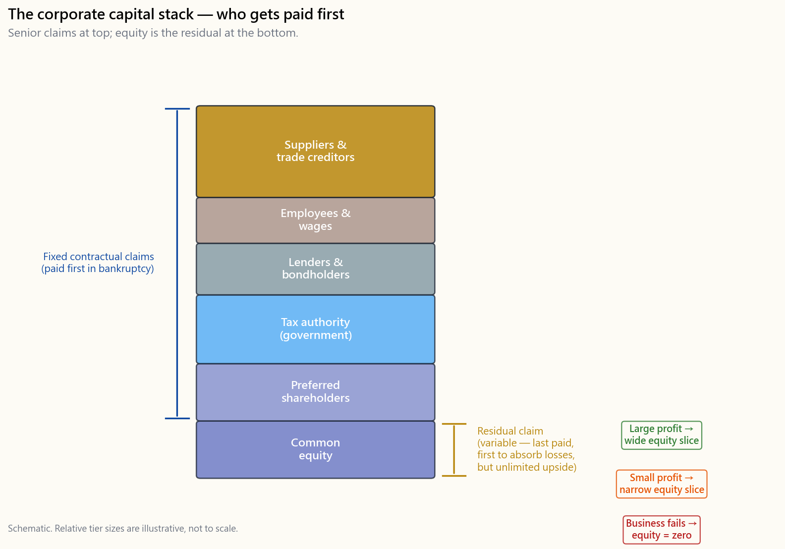
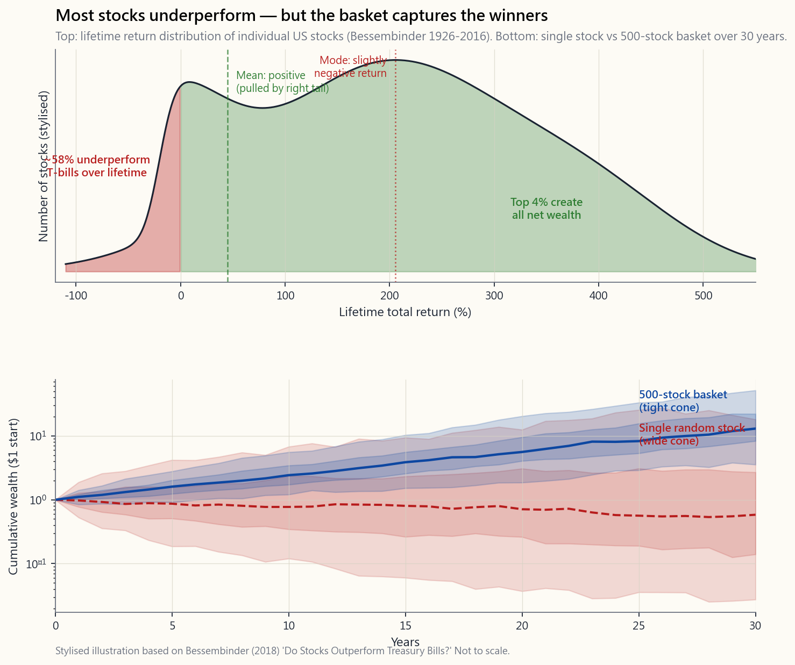

Week 7: Stocks and Equity — Owning a Piece of a Business
1. Why This Is Important
For the first six weeks of this course we have talked about "stocks" as if everyone already knew what one is. The 60/40 portfolio holds 60% stocks. Index funds bundle thousands of stocks. The equity risk premium is the long-run reward for holding stocks. But we have never actually opened the box and asked the basic question: **what is a stock, and what does it mean to own one?**
The honest answer is two sentences. **A stock is a fractional ownership share in a real business — and ownership, in the capitalist system that built this market, is the right to control that business, to redeploy its capital, and to direct its employees. Equity is the residual claim on what is left after the business has paid everyone else.** Those two sentences contain the entire explanation for why stocks rise, why they crash, why one stock is dangerous and a thousand stocks behave like an asset class, and why the price on your screen can disagree — sometimes for years — with what the business is actually worth.
You need to understand stock and equity for four reasons.
memorise that "stocks return 7% real over the long run." You cannot believe it, you cannot hold it through a 50% drawdown, and you cannot reason about why the 7% number is even what it is, until you understand what is actually inside the basket producing it. The 7% is not a magic number on a chart, and it is not the return of "a typical business." It is the return of a curated basket of survivors — a number that exists because the index quietly throws out the failures.
contractual promise: a number of coupons and a return of par. Cash is a claim on the central bank. Gold is a claim on nothing — that's the point. Equity is the residual — whatever is left after employees, suppliers, the tax authority, and bondholders have been paid. That residual position is what gives stocks their asymmetric payoff: large upside on the right side of the distribution, total loss on the left when the business fails.
we open income statements, balance sheets, and cash flow statements. None of that has any meaning unless you already see the share you own as a slice of the business those statements describe. The financial statements are the X-ray of the asset you bought.
most consequential observation about stocks is that individual companies fail with depressing regularity — in the long run, essentially all of them either die or become irrelevant — while the index keeps compounding precisely because it kicks out the failures and brings in the survivors. The idiosyncratic risk of one name does not "diversify away" through some magic of large numbers; it is removed by index construction. We touched on this in Week 2 in the language of index funds; this week we look at what is actually inside the index, and why that matters.
This lesson covers what a company actually is (and why that choice matters), what it means to own one, where equity sits in the capital stack, the four ways equity turns business profit into shareholder wealth, the gap between market cap and book value, why one stock is a lottery while a curated basket is an asset class, and the price-vs-value gap that creates almost every behavioural mistake retail investors make.
2. What You Need to Know
2.1 What Is a Company? Two Views
Before we can say what a stock owns, we have to say what a company is. Business school teaches two views, and they lead to different portfolios.
View (a): A company exists to make profit. Profit is the goal; everything else — products, employees, customers, mission — is instrumentation. Under this view, management's only legitimate duty is to maximise shareholder return. If a higher-return use of capital exists, the existing business should be wound down and the capital redirected. This is the Milton Friedman framing, dominant in US business schools since the 1970s, and it remains the official ideology of most corporate boards.
**View (b): A company has to make profit in order to keep existing — so it can keep doing the thing it actually exists to do.* Profit is the constraint* (you cannot lose money forever and survive) but not the purpose. The purpose is whatever the business openly says it is (build cars, design chips, sell coffee) or what it pursues less openly (cement a founder's legacy, fund a political agenda, perpetuate family control). Under this view, the ultimate fundamental analysis of a business is not "what is its profit margin" but *"can it survive and* still do the thing it actually exists to do?"**
This course is written from view (b). The two views overlap most of the time — a business that cannot make profit cannot do anything else either — but they diverge in two practical situations every investor eventually meets:
- A profitable business that has lost its purpose. It still
- *A barely-profitable business that is unambiguously doing the
You will use both lenses in this course. View (a) tells you when to trim. View (b) tells you when to hold through ugly years. Without both, you will sell the next compounder eight years too early and ride the next zombie ten years too long.
2.2 Stock as a Fractional Ownership Share — And What Ownership Actually Means
A public company has a finite number of shares outstanding — say, 2 billion. If you own one share, you own one two-billionth of that company. That is not a metaphor and it is not a marketing line. It is a legally enforceable property right.
In a private business, that one two-billionth would be a real operational claim — you would have a seat at the table, your view on strategy would matter, you would help direct what the company does. In capitalism, the most fundamental right of ownership is control: the owner of capital decides what to build, who to hire, who to fire, and what to do with the cash thrown off. That is what the word "owner" historically meant — the person who gets to redeploy the capital and command the employees.
For a retail investor holding 100 shares of a $3-trillion mega-cap, that operational right is *technically intact but practically nil*. The largest passive managers (Vanguard, BlackRock, State Street) collectively cast 20–25% of the votes in most S&P 500 names. Insider blocks and a small number of activist funds carry most of the rest. Your hundred shares do not redeploy capital and do not command employees. They participate in someone else's decisions about both.
So what does that one two-billionth practically entitle you to?
- A claim on the cash the business generates — either as
- A claim on the equity-style outcomes of corporate actions —
- A pro-rata vote on shareholder matters — board elections,
- A residual claim on net assets in liquidation. This one
The honest mental model is minority partnership with no operational say. You and 1.99 billion other passive partners have hired a CEO to run a business. The CEO and the board control the business. You collect (or don't collect) a share of what the business produces, you can sell your slice in a deep liquid market any second of any trading day, and you can be taken out at a premium if someone wants to buy the whole company. That is not the same as owning a coffee shop with four friends — and pretending it is leads to a series of mental errors we will correct shortly.
2.3 Capitalism, Capital, and Why This Asset Class Even Exists
It is worth pausing on the word capital in "capitalism", because the whole point of a stock market is that it lets capital flow to the businesses that can use it best.
A business needs capital to build factories, hire engineers, fund research, and pay for working capital before the customers' cheques arrive. Two sources finance that capital: debt (the business borrows and promises to repay a fixed schedule) and equity (someone gives the business money in exchange for a permanent residual claim on whatever the business eventually generates). The stock market is the secondary market where those equity claims trade hands once they have been issued.
This is the structural reason equity exists at all. Debt disciplines a business with fixed coupons; equity funds a business and shares in the upside. Capitalism, as an economic system, allocates real-world resources to the firms it believes will generate the most future cash flow — and the *price mechanism* of the stock market is the daily voting machine by which that allocation happens. When a stock's price goes up, the company can issue new shares at the higher price and raise cheap capital. When it falls, the cost of capital rises and the company is starved. The price is the allocation signal.
That has a consequence retail investors often miss. **You are not required to be a Buffett-style long-term owner to make money in stocks.** Capitalism's price-discovery mechanism creates legitimate shorter-horizon ways to make money:
- You can identify a business whose price is closer to liquidation
- You can identify a sector the passive bid is currently dumping
- You can buy something you believe will be flipped at a higher
This course teaches the long-horizon framing as the default because it is the most reliable on the longest sample. But it does not pretend that flipping is illegitimate. The price mechanism rewards both the patient owner and the well-timed flipper. The only thing it punishes consistently is the trader who has neither a horizon nor a thesis.
2.4 Equity as the Residual Claim — Capital Stack
The cleanest way to understand the financial position of equity is the capital stack. Suppose a company generates $1,000 of revenue in a year. The cash flows out in a fixed order:
| Order | Claimant | What they get | Position |
|---|---|---|---|
| 1 | Suppliers | Cost of goods | Senior |
| 2 | Employees | Wages | Senior |
| 3 | Lenders / bondholders | Interest payments | Senior |
| 4 | Tax authority | Income tax | Senior |
| 5 | Preferred shareholders | Fixed preferred dividend | Mezzanine |
| 6 | Common shareholders | Whatever is left | Residual |
Common equity sits at the bottom of the stack. Everyone else gets paid first on contractually fixed terms. Whatever cash is left after step 5 belongs to the equity holders — to keep inside the business (retained earnings) or to distribute (dividends and buybacks). Two consequences.
**Consequence one: when the business does well, equity captures the upside.** Bondholders are capped at their coupon — a 9% coupon bond pays 9% no matter how good the year is. Suppliers get paid their invoice. Employees get their salary plus, perhaps, a bonus. None of those parties participate in growth. If the business doubles its profit, every dollar of that extra profit flows to the residual claimant — the equity holder. That growing residual either lands in your brokerage account as a dividend or buyback, or it gets ploughed back into the business and shows up in the share price.
**Consequence two: when the business does poorly, equity absorbs the downside first.** A bad year means the senior claimants still get paid first. Profit shrinks. The equity holder eats the shortfall. In the limit — bankruptcy — bondholders take recoveries in the range of 30–60% of par for senior unsecured debt, often less for subordinated; common equity is almost always wiped to zero. The 2008 holders of Lehman Brothers' 5.625% 2013 senior unsecured bonds eventually recovered roughly 21 cents on the dollar after a many-year process; the holders of Lehman common stock got nothing.
A practical caveat on the bondholder side. The textbook recovery percentages assume the bankruptcy proceeds in an orderly way. In reality, the lawyers, advisors, and trustees administering the process can consume a large slice of the remaining estate before any cash reaches the unsecured bondholders. If you ever find yourself holding the bonds of a company sliding into default, the practical decision is rarely "wait for the recovery"; it is usually "sell to a distressed-debt specialist who is set up for the legal grind." The lawyer-fee drain is the reason the textbook recovery numbers and the recovery numbers actual retail holders see can differ by half.
![Diagram of the corporate capital stack as a vertical bar showing six tiers from top (senior) to bottom (residual): suppliers, employees, lenders/bondholders, tax authority, preferred shareholders, and common equity at the bottom. The top tiers are shaded uniformly to indicate fixed contractual claims, while the common-equity tier at the bottom is shaded as a wedge expanding to the right to indicate that the equity claim varies with business outcomes — narrow when profit is small, wide when profit is large, zero when the business fails.](image/week07_capital_stack.png)
The asymmetry of equity — large upside, downside floored at zero (you cannot lose more than you invested in a long stock position) — is what makes it worth owning despite the risk of total loss on any single name. A bond's payoff is the mirror image: capped upside (the coupon), asymmetric downside (default loss net of recovery). The equity risk premium — the extra ~4–6% a year that the US stock market has earned over Treasuries across long history — is the market's compensation for taking the asymmetric downside of being last in line in exchange for the asymmetric upside of being first to participate in growth.
2.5 Why "Stocks Compound" — and the Survivorship Asterisk
You will see the same headline number repeated in every textbook and every brokerage marketing email: US stocks have returned roughly 7% per year after inflation across the last hundred-plus years (Siegel's Stocks for the Long Run; the equivalent nominal number is roughly 10%). That number is real, in the sense that it is correctly computed from the data. But the interpretation most courses attach to it is wrong, and the wrong interpretation produces wrong portfolios.
The wrong story. "A typical business earns 10% on capital, reinvests half and pays out half, so its earnings power compounds at 5% per year. The shareholder collects another 2–3% in dividends and buybacks. Add a little for inflation and you get the 7–10% long-run return — the natural arithmetic of equity ownership."
That story is internally consistent. It is also a description of what survivor businesses look like, not what the average business actually does. The honest version is:
The right story. The index compounds at 7–10% real. The average individual company in the index ten years ago emphatically did not. Most companies, including most companies that have ever traded on a US exchange, eventually go to zero or become irrelevant. Many never grow at all — they earn back their cost of capital in a flat way and disappear in a buyout or a slow decline. The 7% number comes from a small minority of names whose 10x and 100x returns carry the basket, plus the *index construction rule* that quietly removes the failures along the way.
This is survivorship bias in its sharpest form. The S&P 500 today is not the S&P 500 of 1990. Roughly half the names have been swapped out — Eastman Kodak, Polaroid, Sears, Lehman, Bear Stearns, GE-as-it-was, GM-as-it-was, and hundreds more were either kicked out for shrinking below the size threshold or removed for bankruptcy, while Apple, Microsoft, NVIDIA, Tesla, Meta, Alphabet and a long list of others were added on the way up. The index that compounds at 10% per year is, in effect, an actively curated portfolio with a rules-based mechanism for removing losers and adding winners. It is not a passive bet on "the average company."
That has three immediate consequences for how you read this lesson and the rest of the course.
average stock.** When someone tells you "just hold for thirty years and you'll get the 7%," they are quietly assuming you held it through a vehicle that kicks the failures out along the way. Holding a randomly-chosen individual stock for thirty years has a very different distribution.
survivors, and the index largely is* the survivors. The mediocre business in the story does not stay mediocre — it usually dies and gets quietly replaced in the basket you are holding.
survivors are mathematically guaranteed to be in it, or you need to do the work to identify the survivors.** The 7% long-run number does not arrive by sitting passively next to any randomly-chosen ten-stock portfolio. It arrives by sitting in a vehicle whose construction rule selects for survival.
This is the deepest reason Week 2 told you to start with broad index funds — not because indexing is "simple" or "passive" (the S&P 500 is anything but passive in the sense the marketing language suggests), but because the index's construction rule is the survival filter, applied for free, on autopilot.
2.6 The Four (Plus One) Channels — How Profit Becomes Shareholder Wealth
A profitable business has a small menu of things it can do with the cash it earns. Each one becomes a different component of your total return.
Build another factory, hire more sales staff, fund R&D, expand into a new geography. If the reinvestment earns above the cost of capital, this grows the earnings power per share — and the stock price re-rates upward to reflect the higher future profit stream. For a high-ROIC growth business, this is the dominant channel by a wide margin: the shareholder return is entirely captured in price appreciation, with no dividend at all.
Real money hits the brokerage account. In the US, qualified dividends are taxed at long-term capital-gains rates (currently 0/15/20% depending on bracket, plus the 3.8% net-investment income tax for higher earners); ordinary dividends and most foreign dividends are taxed as ordinary income. Mature businesses with limited high-return reinvestment opportunities — utilities, consumer staples, integrated oil, REITs — return most of their earnings as dividends.
Aside: dividends vs bond coupons for retirees. Many retirees are drawn to high-dividend stocks because the headline yield looks competitive with a Treasury. The historical comparison is messy. Across the 1928–2024 sample the S&P 500 dividend yield averaged about 3.5% and the 10-year Treasury yield averaged about 4.8%, but the relationship moved dramatically across regimes — dividends generally exceeded Treasury yields through the 1930s–1950s, ran well below Treasuries from 1960 through the early 2000s, and have run roughly *at or below* Treasury yield since. If the two were perfectly interchangeable claims, the gap would arbitrage away. It does not, because they are not interchangeable: a dividend can be cut (and is, in roughly 5–10% of payers in a recession), the underlying stock can drop 30% in the year you needed the income, and the equity layer absorbs business risk that a Treasury simply does not carry. The working rule is to treat a dividend stock as an equity position with an income tilt, not as a higher-yielding substitute for a bond. We come back to this in Side 10.
own stock in the open market and retire it. The number of shares outstanding falls; your one two-billionth becomes one 1.95-billionth, and your claim on every future dollar of profit rises in proportion. Mathematically, a $1 buyback at fair value is identical to a $1 dividend — with the tax characterisation deferred until the shareholder eventually sells. That deferred tax is half the reason US large-caps have favoured buybacks over dividends since the 1990s. The other half is **executive compensation**. Most senior executives are paid largely in stock options and restricted stock; their personal payoff is a direct function of the share price, not of the dividend yield. A buyback elevates the share price (fewer shares, same earnings, higher earnings-per-share number, often a higher multiple-driven price); a dividend transfers cash to all shareholders equally and leaves the share count alone. The CFO is rarely indifferent between those two outcomes.
another company. This is the highest-variance use of capital. Done well — when the acquired business slots into the buyer's existing operations and the price was disciplined — it compounds shareholder wealth. Done badly — and the long-run academic evidence is that most large M&A destroys value for the acquiring shareholder — it is a permanent transfer of cash from your slice of the business to the seller's bank account.
There is also a fifth channel that does not appear on most textbook lists, because it happens to the company rather than being chosen by the company:
the company you hold, the deal is typically struck at a premium of 20–40% over the prevailing share price. Your fractional slice gets paid the same per-share consideration as every other holder. This is the mirror image of channel 4 — if buying overpriced companies destroys value for the buyer, being the company that gets bought delivers a windfall to the seller. Across the long sample, takeover premia are not noise; they are a real, recurring component of equity returns, especially in the small- and mid-cap sleeves where acquisition activity is densest.
For the long-term shareholder, the total return of a stock decomposes into (a) the change in earnings per share, (b) the dividends received, and (c) the change in valuation multiple (price/earnings). Over decades, (a) and (b) dominate; over months, (c) dominates. That is the structural reason the same asset class can look like a great long-term hold and a brutal medium-term mark-to-market simultaneously: different time horizons emphasise different components.
2.7 Why Stocks Are an Imperfect Inflation Hedge
Week 1 framed investing as a fight against inflation: hold cash and the purchasing power of your savings erodes year after year. This is the natural place to connect that argument back to the asset we have just opened up. **Cash is a fixed nominal claim. A bond is mostly a fixed nominal promise. A stock is ownership of a business whose nominal cash flows may grow with the price level.** That single sentence is the mechanism — and the rest of this subsection is the fine print on why it works and where it breaks.
Start with the residual-claim picture from §2.4. A bondholder is promised a fixed number of dollars: a coupon stream and a return of par. If the general price level doubles over the life of the bond, the dollars still arrive on schedule, but each one buys half as much. The contract is nominal. Inflation is the bondholder's silent counterparty risk.
Equity is structurally different. You do not own a promise to be paid a number of dollars. You own a fractional slice of a real business that sells goods and services *priced in the current dollars of the day*. When the general price level rises:
- A coffee chain's menu prices rise.
- A consumer-staples company's shelf prices rise.
- A software vendor renews enterprise contracts at higher
- An industrial business raises its quotes to reflect higher
- The replacement value of factories, land, brands, and
If a company has pricing power — the ability to push higher prices through to customers without losing them to a competitor — nominal revenue rises with inflation, nominal earnings tend to follow, and the four-plus-one channels from §2.6 (retained earnings, dividends, buybacks, acquisitions, being acquired) all flow through in nominally larger amounts. The residual claimant at the bottom of the capital stack ends up owning a business that is nominally larger. Over long horizons this is why broad equity has historically preserved purchasing power in a way that cash and most nominal bonds have not.
This is the lens behind the famous 7% real number the lesson keeps citing — measured by Jeremy Siegel across roughly two centuries of US equity data in Stocks for the Long Run. Real means after inflation has been subtracted. The fact that there is a positive number left after stripping out CPI is the empirical signature of the mechanism described above: aggregate business cash flows growing roughly with the price level, plus a real productivity-and-reinvestment premium on top.
But the inflation-hedging property is imperfect, and being honest about that imperfection is more useful than the textbook's "stocks beat inflation" slogan.
prices freely (Coca-Cola, ASML, See's Candies when Charlie Munger first bought it). Others compete on commodity output into a global market and cannot (airlines, most steel producers, generic memory chips). In a sustained inflation, the index is the average of both groups.
Energy rises. Whether a business captures the inflation as higher earnings or gives it back as squeezed margins depends on which side of the price-cost gap re-prices faster.
banks to raise short-term interest rates, which lifts the long-term discount rate the market applies to future cash flows. Even if nominal earnings rise on plan, the present-value calculation that drives the share price gets a bigger denominator. The arithmetic is mechanical: higher discount rate → lower price/earnings multiple.
the historical pattern, not a theory. From roughly 1966 to 1982 — the Arthur Burns and early Paul Volcker era — US CPI ran at high single digits and into double digits. The S&P 500 earned its way through the period in nominal dollars, but the price/earnings multiple fell from the high teens to single digits. Real returns over the full window were roughly flat. Stocks did not protect investors on a five-year mark-to-market basis even though the underlying businesses were growing nominally with the price level.
Over rolling decade-plus windows, broad US equity has meaningfully out-earned CPI. Over rolling one- and three-year windows during a CPI surprise, equities can fall with bonds — 2022 is the most recent reminder, with the S&P 500 down roughly 18% nominal and a US 60/40 portfolio delivering one of its worst years on record.
The practical conclusion for the residual-claim asset:
- Long-term inflation hedge: yes. A diversified basket of
- Short-term CPI hedge: no. When inflation surprises to the
When you put §2.6 and §2.7 together, you have the inflation argument the course has been pointing at since Week 1. Businesses sell at the prevailing price level. Their earnings, dividends, buybacks, and replacement asset values grow with that price level over time. The residual claimant — you, the shareholder — owns a stake in that nominally growing stream. Cash and bonds do not give you that. The mechanism is real. The timing is unreliable. Both halves of that sentence have to live in the same head for the rest of the course to make sense.
2.8 Market Cap, Book Value, and Why the Numbers Differ
Two numbers every investor sees daily, and which most never properly distinguish.
Market capitalisation ("market cap") is the share price multiplied by the number of shares outstanding. It is what the market currently values the entire equity layer of the business at. A $200 share price × 15 billion shares = $3 trillion of market cap. This is the most important single number in equity investing for one specific reason: **index inclusion rules use it to decide which companies are in your basket and at what weight.**
- The S&P 500 selects from US companies with a market cap above
- The Russell 1000 covers roughly the largest 1,000 US
- The MSCI All-Country World Index weights every member country
The structural implication: **the index is a momentum machine on market cap.** A company that grows from $5 billion to $50 billion in market cap drags the index up as it rises and gets a larger weight in the index along the way. A company that falls from $50 billion to $5 billion gets a smaller weight on the way down and is eventually kicked out. The "passive" S&P 500 is, in this sense, an actively-managed momentum portfolio with the rebalance rule pre-specified.
Market-cap tiers are the working vocabulary the industry uses:
| Tier | Approximate range | What it tells you |
|---|---|---|
| Mega-cap | > $200 billion | Index-defining, sets the S&P 500's return |
| Large-cap | $10–200 billion | Most of the S&P 500 |
| Mid-cap | $2–10 billion | Survivors past the first hurdle; many future large-caps live here |
| Small-cap | $300 million to $2 billion | Russell 2000 territory; high failure rate, occasional 10x |
| Micro-cap | < $300 million | Mostly noise, illiquid, dominated by stories rather than businesses |
The mid-cap tier deserves a separate note. A company that has crossed $1 billion in market cap, is profitable, and is growing revenue has already cleared the first major survival hurdle. Statistically, the next 10x is more likely to come from this tier than from either the micro-caps below (mostly noise) or the mega-caps above (already large; another 10x is mathematically hard). The S&P 500's inclusion rule — implicitly a "must reach mega-/upper-large-cap with consistent profitability" filter — is itself a coarse version of an ex-ante winner-identification mechanism. That is not a contradiction with the survivorship section above; it is the same point from the other side. The index is curated exactly because you can do better than random by applying coarse filters.
Book value ("shareholders' equity" on the balance sheet) is the accounting alternative. Take every asset at the value the accountant has recorded, subtract every liability, and the remainder is the book value of the equity. Book value is what you would (theoretically) get if the business sold every asset at recorded prices, paid off every creditor, and handed the remainder to shareholders.
The two numbers are almost never equal, and the gap tells you something:
- Market cap >> book value: the market believes the business is
- Market cap < book value: the market believes the recorded asset
- Negative book value: total liabilities exceed total recorded
Book value is most informative for asset-heavy businesses (banks, real estate, capital-intensive industrials) where the recorded asset values approximate liquidation values. It is least informative for asset-light businesses (software, consumer brands, marketplaces) where most of the value lives in intangibles the accountant cannot record.
2.9 Why One Stock Is Risky and a Curated Basket Is Not
The single most important fact about individual stocks is that they fail. Hendrik Bessembinder's 2018 study of every US stock that has ever traded from 1926 through 2016 found that **only 4% of stocks account for the entire net wealth creation of the US stock market**. The other 96% collectively returned roughly the same as holding T-bills. More than half of individual stocks destroyed shareholder wealth on a buy-and-hold basis. The median stock's lifetime return underperformed cash.
That is not a typo. It does not mean the stock market is a bad investment. It means the stock market's return is *concentrated in a small minority of names*, and the only way to be reliably exposed to those few names is either (a) to do the work to identify them in advance, or (b) to hold a vehicle whose construction rule guarantees they end up in your basket whether you predicted them or not.
![Two-panel chart: top panel shows the distribution of lifetime US stock returns from Bessembinder's 1926-2016 dataset, with a long left tail of negative-return stocks, a thick cluster around zero/T-bill returns, and a thin but extreme right tail of mega-winners. The mode of the distribution is at a small negative return; the mean is positive only because of the right-tail outliers. Bottom panel shows the cumulative wealth path of a single random stock vs an equal-weight basket of 500 stocks over a hypothetical 30-year period: the single stock has a wide cone of possible outcomes including total loss, while the basket has a much tighter cone clustered around the long-run market return.](image/week07_concentration_vs_diversification.png)
Two consequences for portfolio design.
First, a single-stock buy-and-hold position carries idiosyncratic risk that is not compensated by an ex ante guaranteed extra return. You cannot truly compute an "expected return" for one stock — you can only observe its actual return after the fact, and reason about a distribution of possible returns. The empirical single-stock distribution has a thick left tail (failure), a thick centre (mediocre survival), and a thin right tail (mega-winners). For any single name picked at random, you are far more likely to land in the left or middle than in the right tail.
Second, the math of why a basket works is not the law of large numbers in some vague averaging sense. It is that the right tail of the distribution — the few mega-winners — is nearly certain to be in any sufficiently broad basket *that has a survival rule*. The S&P 500's market-cap weighting and quarterly rebalance is exactly that rule: anything that grows into the top 500 gets in; anything that shrinks out falls off. You are not really "buying the average" of all US stocks when you buy SPY. You are buying the curated top 500 survivors plus rising stars and you are getting their cap-weighted growth, with the left tail of failed micro-caps cleanly removed by index construction.
This matters because it changes what "passive" really means. There is an important difference between three claims:
- "Pick five favourite companies and buy them" — high-variance,
- *"Pick 100 reasonable companies — say, the Nasdaq 100 — and
- "Sector tilts, factor tilts, and index-minus-known-landmines"
The deeper rule is simple: **always hold a basket curated by some rule** — yours or someone else's. The basket can be a major index, a sector ETF, an index minus a known landmine, or a hand-picked dozen names with a written thesis for each. What it cannot be is a random scatter of five favourites picked from headlines, because that is the portfolio the Bessembinder distribution chews up.
2.10 Stock Price vs Business Value — The Honest Version
A share is a claim on the business. The price of that share on any given second is the result of a continuous double auction between buyers and sellers. Over the long run, those two numbers converge — the market is, in the long run, a **truth machine**. Over months or years they can diverge substantially. The size of the gap depends on the regime and the flow.
Three things are worth getting straight, because the textbook Mr. Market story leaves them all out.
(i) The market is not a perfect-information clearing house. The classical "efficient market" framing — every fact is in the price the moment it is knowable — is a useful default because it stops you from trading on stale information. But it is empirically wrong as a description of how the market actually clears. The flow you trade against is not "the collective wisdom of all investors"; it is a mix of high-frequency market makers, statistical-arbitrage funds, quantitative trend followers, dealer hedging flows, passive rebalancing flows from $7 trillion of indexed assets, retail order flow being internalised by wholesalers, and the occasional slow-moving fundamental investor. Information leaks — legitimately via credit-default-swap moves and earnings whispers, less legitimately via insider trading the SEC catches a few times a year. Some buyers and sellers genuinely know things others do not. The price is the *current clearing output* of that messy ecosystem.
*(ii) The stock price is* a measurement of the business — just a noisy one, with a lead.** Empirically, share prices tend to move before the headline earnings release that "justifies" them. That is not magic; it is a sign that some of the flow has forward information the headline reader does not yet have. So the right framing is:
*The market price is the running estimate of business value, computed by an enormous distributed machine that has better information than you most of the time and worse information than you a small fraction of the time. Your job is to identify the small fraction.*
**In the short run the market is noisy. In the long run the market is a truth machine.** Both halves are important. The short-run noise is what creates the opportunity; the long-run truth is what closes it.
(iii) The screen shows much more than "a single data point." On any real trading screen you see the last trade price and the bid/ask spread (already two prices, not one), the level-1 quotes for the top of the book, level-2 quotes for the depth behind it, the intraday volume profile, open interest in the options market across strikes and expiries (a forward-looking implied distribution), short interest and the cost to borrow, the float versus shares outstanding, the earnings calendar, the analyst range, recent insider transactions. All of that is price-data in some form, and a serious investor reads many lines of it, not just the printed last-trade number. We come back to the option-implied-distribution piece in Weeks 25–29.
The classical statement of the price-value gap is Benjamin Graham's Mr. Market metaphor (from The Intelligent Investor, 1949): imagine you own a share of a private business with a single business partner, Mr. Market, who knocks on your door every morning offering to buy your share or sell you his at a quoted price. The metaphor is useful for one narrow purpose — reminding the investor that they are not obligated to trade with the market every day. Take it no further. The "Mr. Market" of 2026 is not an emotional voter; it is the integrated flow of algorithms, dealers, and institutional rebalancers described above, with a residual of slow-moving fundamental investors at the margins. That machinery is sometimes wrong, but it is rarely wrong because it is "depressed". It is wrong because forward information is genuinely uncertain and different participants have different views.
Volatility is sometimes information. Two cases that look the same on the chart but are different on the underlying:
- The market drops 8% in a week on a macro shock with no
- The market drops 30% in a single stock in a month, and three
The honest answer is **you usually do not know which case you are in in real time.** Both stories are real. The discipline is to (a) keep position sizes small enough that a 30% drawdown on any one name does not damage the household balance sheet, (b) ask whether anything fundamental has actually changed before treating a drop as a buying opportunity, and (c) accept that sometimes the market is ahead of you and the right answer is to take the loss rather than "average down" into a slow-moving train wreck.
Hold-or-sell and the irrelevance of cost basis. Your cost basis is irrelevant to the question of whether you should still own a position. Economically, the decision to hold a share today is the same decision as the decision to buy that share today — would you, at this price, choose to allocate this much capital to this business? If yes, hold. If no, sell. Your purchase price two years ago is sunk. Cost basis matters only for tax purposes (the wash-sale rule, long-term vs short-term gain treatment, loss harvesting). It is not an input to the investment thesis.
2.11 What This Sets Up for the Rest of the Course
- Next week (Week 8) — Reading Financial Statements. Now
- Week 9 — Market Indexes. A deeper look at how the index
- Week 11 — Behavioural Biases and Rebalancing. The largest
- Week 21 — Equity Valuation. How to estimate the value
When you next look at a stock ticker, force yourself to ask:
hold — profit-first or purpose-first?* You will reason about it differently under each.
to change as it grows or shrinks?* The flow follows the cap.
business, or to a temporary mismatch driven by flow?* If you cannot tell, that is itself useful information — own the basket, not the name.
3. Common Misconceptions
**Misconception 1: "Stocks are just numbers on a screen — paper that goes up and down."**
A stock is a legally enforceable ownership claim on a real business with real factories, real employees, real customers, and real cash flows. The price on the screen is the current clearing output of a continuous auction. Every long-term investment decision is best made about the business; short-term price moves should be interpreted as news about the flow, with an honest allowance for the possibility that the flow knows something the fundamental story has not yet revealed.
**Misconception 2: "Owning a few shares gives me a meaningful say in how the company is run."**
It does not, for retail-sized positions in a mega-cap. The right exists; the practical influence does not. Vanguard, BlackRock, and State Street collectively control 20–25% of the votes in most S&P 500 names; insider blocks control most of the rest. A hundred-share position is a financial claim on the cash flows, not an instrument of corporate control.
**Misconception 3: "Dividends are a 'free' return on top of the stock price."**
They are not. A $1 dividend payment causes the stock price to fall by approximately $1 on the ex-dividend date. The dividend is not free money; it is the transfer of $1 of business value from the company's bank account into your bank account. Your total wealth (stock + cash) is unchanged the moment the dividend is paid. The dividend's only economic effect is to convert unrealised stock value into realised cash, with the tax consequences that follow.
Misconception 4: "Buybacks just enrich executives."
There is real truth in this — executive option and restricted-stock compensation does mean management has a personal preference for buybacks over dividends — but the framing is incomplete. At a price below intrinsic value, a buyback is a clean transfer of business value to the remaining shareholders, including the retail holder. At a price above intrinsic value, the buyback elevates the share price in the short run (which is the channel through which the executive's options pay off) and destroys intrinsic per-share value over the longer run. As a retail investor your defence is simple: if you do not like the way a business is being run, you can sell the position any second of any trading day. Deep public-market liquidity is one of the genuine advantages of public-equity ownership over private partnership.
**Misconception 5: "If I just pick five great companies, I'll beat the index."**
The Bessembinder distribution says five is too narrow. A five-stock portfolio has a meaningful probability of containing zero of the right-tail mega-winners, in which case it underperforms cash. A hundred is a different story. The Nasdaq 100 has out-returned the S&P 500 across most multi-decade windows in the modern data; the S&P 500 has out-returned the Russell 3000; both are "narrower" baskets than the universe but their construction rules select for the right tail of the distribution. The honest rule is always hold a basket — five favourites is too narrow; a curated hundred with a survival rule is not. "You need to be a brilliant stock-picker to do anything other than buy the cap-weighted index" is a marketing line, not a fact. Sector tilts, factor tilts, and "index-minus-known-landmines" are all legitimate ways to add return without superhuman skill.
**Misconception 6: "If a stock pays no dividend, it's not returning anything to shareholders."**
The cash that would have been a dividend is being retained and reinvested in the business. If management's reinvestment earns a positive return on capital, the share's claim on future cash flows grows by exactly that amount, and the share price re-rates. The shareholder return is captured in price appreciation rather than cash distribution — the same economic value, in a different tax wrapper, often with the additional benefit of pure compounding before tax is realised.
**Misconception 7: "A stock that has fallen 50% must be a bargain."**
Sometimes. Sometimes not. The honest framing is that price drops fall into two categories that look identical on the chart: (a) the market was briefly mispricing a fundamentally unchanged business — in which case the drop is a buying opportunity; and (b) the market saw deterioration before the headline news caught up — in which case the price drop was the information and "averaging down" is averaging into a slow train wreck. Distinguishing the two requires reading the business — financial statements, competitive position, management quality. The price drop alone never tells you which case you are in.
Misconception 8: "Stock and equity are different things."
In this context they are interchangeable. Stock is the financial instrument; equity is the underlying ownership claim it represents. When the financial press says "the equity rallied," they mean the stock price rose. When an accountant says "shareholders' equity is $40 billion," they mean the residual book value of the business after subtracting all liabilities from all assets. Same concept, different angle.
**Misconception 9: "I missed the chance to buy great companies when they were small. The opportunity is over."**
The right-tail-winner phenomenon is a permanent feature of equity markets, not a one-time event. The mid-cap tier ($2–10 billion) is precisely the bench from which the next mega-caps emerge. Some of those names you can identify ex ante — a clean balance sheet, durable margins, founder still running it, growing into a large addressable market is not an impossible filter to apply. The S&P 500's market-cap inclusion rule is itself a coarse version of exactly that filter, run on autopilot. You cannot identify every winner ex ante with certainty, but you can do better than random.
**Misconception 10: "Cost basis matters for whether I should keep holding a stock."**
It does not. The decision to hold a position today is the same decision as the decision to buy it today — would you, at the current price, choose to allocate this capital to this business? If yes, hold. If no, sell. Your purchase price two years ago is sunk. Cost basis matters only for tax management: long-term versus short-term gain treatment, wash-sale rules, and tax-loss harvesting. It is never an input to the investment thesis.
4. Q&A
**Q1: If equity is the residual claim, why is it more valuable in the long run than the senior bond claim?**
A: Because the residual captures the upside when the business does well, while the senior bond is capped at its coupon. Across the full distribution of business outcomes — most years modestly positive, a few years extremely positive, occasional disasters — the asymmetric upside of equity more than compensates, on average, for the asymmetric downside of being last in line. That excess return is the equity risk premium, historically about 4–6% per year above Treasuries. It is not free; you pay for it in the volatility and drawdowns we cover next.
**Q2: How do I evaluate whether a company's reinvested earnings are creating value?**
A: The shorthand metric is return on invested capital (ROIC). Take the after-tax operating profit and divide by the capital the business has tied up (debt + equity, less excess cash). If ROIC is comfortably above the cost of capital (typically 8–10% for a US large-cap), every retained dollar is worth more than a dollar in the shareholder's pocket — so retention is the right call. If ROIC is below cost of capital, every retained dollar is worth less than a dollar — so the shareholder would rather have it as a dividend or buyback. We work through this calculation in Week 19 (Corporate Finance).
**Q3: When a company splits its stock 2-for-1, does my ownership double?**
A: No. Your number of shares doubles and the price per share halves. Your claim on the business is unchanged — same fraction of the same company at the same total dollar value. A stock split is a cosmetic change to the share count, not an economic event. Companies do it mostly for behavioural reasons (some retail investors prefer "round number" share prices) and operational ones (options-contract specifications, index eligibility thresholds).
Q4: How is preferred stock different from common stock?
A: Preferred sits between debt and common equity in the capital stack. It pays a fixed dividend (more like a bond coupon) and has priority over common in liquidation, but it does not participate in business growth above the fixed dividend (more like a bond). For most retail investors, preferreds are a quasi-fixed-income instrument with credit risk — useful in a search-for-yield context but not a substitute for either common equity or true investment-grade bonds.
**Q5: What is the difference between a common share, an ADR, and a depositary receipt?**
A: A common share is the native equity instrument issued by the company in its home country. An **American Depositary Receipt (ADR)** is a US-traded certificate that represents one or more underlying shares of a non-US company; it lets US investors hold the foreign equity through their normal US brokerage account without dealing with the foreign settlement system. Economically, owning an ADR of Toyota is owning Toyota common stock, plus or minus the ADR sponsor's small custody fee and some currency-conversion mechanics.
**Q6: What does it actually mean if a company has 'shareholders' equity' of $50 billion on the balance sheet, and what about negative book equity?**
A: It means that if the company sold every asset at the value recorded on the books, paid off every liability, and handed the remainder to common shareholders, the remainder would be $50 billion. That number is an accounting construct (book value) and is usually quite different from market cap (share price × shares outstanding) and from intrinsic value (present value of future cash flows). The three numbers should bear some relationship for a healthy business; large divergences usually mean the accounting is failing to capture intangible assets, off-balance-sheet items, or growth optionality.
Book value can also be negative, and the two reasons for that look identical on the balance sheet line but mean different things. (i) Aggressive buyback history. A company that has spent years repurchasing stock at prices above book value has been ratcheting its accounting equity downward; if it does it long enough, the equity line goes negative. Boeing, McDonald's, and Philip Morris have all sat at negative book value at various points. This is an accounting artefact, not a solvency signal — as long as the cash flow statement still shows positive operating cash, the business is fine. (ii) Accumulated losses. The company has lost money for so long, or taken such large write-downs, that the cumulative damage has eaten through the equity layer. This is a real solvency warning. The difference between the two is visible in the cash flow statement, not on the balance sheet itself; we cover the diagnostic in Week 8 and again in the credit-analysis section of Level 3.
Book value is most informative for asset-heavy businesses (banks, real estate, capital-intensive industrials) where the recorded asset values approximate liquidation values. It is least informative for asset-light businesses (software, consumer brands, marketplaces) where most of the value lives in intangibles the accountant cannot record.
Q7: Are stock buybacks always preferable to dividends?
A: From a tax standpoint in the US, generally yes — buybacks defer the shareholder's tax bill until the eventual sale, while dividends trigger immediate tax. From a capital allocation standpoint, only when the buyback price is below intrinsic value; buying back overvalued stock destroys per-share value over time even as it elevates the price in the short run. Different shareholder bases also have different preferences — retired investors who depend on cash income often prefer dividends; working-age investors building wealth often prefer buybacks. There is also the executive-pay channel: most senior managers are paid in stock options and restricted stock, so they have a personal financial preference for the channel that lifts the share price (buybacks) over the one that does not (dividends).
**Q8: How does the equity risk premium connect to the 60/40 portfolio we built in Week 4?**
A: The 60% in stocks is the portfolio's exposure to the equity risk premium — the excess return over bonds that you collect for holding the residual-claim asset. The 40% in bonds gives up most of that excess return in exchange for a much narrower drawdown profile. The mix is a literal trade between two payoff shapes — equity's asymmetric upside and bond's contractual stability. Understanding stock as the residual claim is what makes the 60/40 mix make sense as a behavioural compromise rather than a magic number.
**Q9: I've heard "the stock market is not the economy." What does that mean?**
A: The stock market represents the publicly listed slice of the economy, weighted by market capitalisation. Public companies are roughly half of US GDP; the other half (private companies, small businesses, the public sector) is not in the index at all. Within the public slice, the index is dominated by a handful of mega-caps whose performance is not representative of the average American firm. So when GDP grows 2% and the S&P 500 returns 18%, the divergence is not a contradiction — it just means the slice of the economy that is in the index outperformed the rest. Conversely, in the 1970s, GDP grew but the S&P went nowhere because valuation compressed — a reminder that the index reflects valuation in the short run, not just fundamentals.
**Q10: I'm a retiree. Should I prefer dividend-paying stocks over bonds for income?**
A: They are different instruments with different risk profiles even when the headline yields look similar. Across the long US historical sample, the S&P 500 dividend yield averaged about 3.5% and the 10-year Treasury about 4.8%, but the relationship between them has shifted across regimes — equities yielded more than Treasuries through the 1930s–1950s, less from 1960 through the early 2000s, and roughly at or below Treasury yield since. If they were perfectly interchangeable claims the gap would arbitrage away. It does not, because the risk is different: a dividend can be cut (and is, in roughly 5–10% of payers in a recession), a 30% stock drawdown can hit you in the same year you need the income, and the equity layer absorbs business risk that a Treasury simply does not carry. A reasonable retiree portfolio uses both — high-quality dividend equities for the long-run real return and inflation protection, Treasuries and short-duration credit for predictable cash. Replacing all bonds with high-yield dividend stocks is a recipe for the worst possible sequence-of-returns outcome in a bad year. Side 10 (Dividends) and Side 11 (Retirement Accounts) cover this in detail.
Q11: How does this lesson connect to next week?
A: Next week we crack open the financial statements — income statement, balance sheet, cash flow statement. Those documents are how the business reports its financial reality to the outside world. Your share is a slice of the business those statements describe. Reading the statements is how you check whether the current market price is closer to the long-run truth of the business or to a temporary flow-driven dislocation. Without the framing of "stock = slice of business" we built this week, the statements are just spreadsheets. With it, they are the X-ray of the asset you own.
第七週：股票與股權——擁有企業的一部分
1. 為什麼這很重要
在本課程的前六週，我們一直在談論「股票」， 彷彿人人都已知道它是什麼。60/40投資組合持有 60%股票。指數基金將數千隻股票捆綁在一起。股票風險 溢價是長期持有股票的回報。但我們從未 真正打開這個盒子，問這個基本問題：股票是什麼，擁有一隻股票意味著什麼？
誠實的答案只需兩句話。股票是真實企業的部分所有權股份——而在建立了這個市場的資本主義體系中，所有權就是控制該企業、重新部署其資本以及指揮其員工的權利。 股權是企業在向其他所有人付款後剩餘的剩餘索償權。 這兩句話包含了股票上漲、崩跌的完整解釋，解釋了為何一隻股票充滿危險而一千隻股票卻表現得像一種資產類別，也解釋了為何螢幕上的價格有時會與企業的實際價值相差甚遠——有時長達數年。
你需要理解股票與股權，原因有四。
記住「股票長期實際回報約7%」。但你無法真正相信它，無法在50%的回撤中堅守它， 也無法推理為何7%這個數字是這樣的，除非你理解籃子裡究竟裝著什麼。這7%不是圖表上的魔法數字， 也不是「典型企業」的回報。它是一籃子經過篩選的倖存者的回報——這個數字之所以存在，是因為指數悄悄地將失敗者踢出局。
合約承諾：若干票息加上本金歸還。現金 是對中央銀行的索償。黃金不索償任何東西—— 這正是它的意義所在。股權是剩餘——在員工、供應商、稅務機關和債券持有人獲得付款後，所剩餘的一切。這種剩餘地位賦予股票非對稱的回報：分佈右側有巨大上漲空間，當企業失敗時左側則全盤皆輸。
我們將翻開損益表、資產負債表和現金流量表。除非你已經將自己持有的股份視為那些報表所描述的企業的一個切片，否則這些內容毫無意義。財務報表是你所購買資產的X光片。
本課涵蓋：一家公司究竟是什麼（以及為何這個選擇很重要）、擁有一家公司意味著什麼、股權在資本結構中的位置、股權將企業利潤轉化為股東財富的四種途徑、市值與賬面值之間的差距、為何單一股票是彩票而精選籃子卻是一種資產類別，以及製造幾乎所有散戶行為錯誤的價格與價值之間的落差。
2. 你需要知道的事
2.1 公司是什麼？兩種視角
在我們能說股票擁有什麼之前，必須先說清楚公司是什麼。商學院教授兩種視角，它們會導向不同的投資組合。
視角（a）：公司存在是為了賺取利潤。 利潤是目標；其他一切——產品、員工、客戶、使命——都是工具。在這種視角下，管理層唯一合法的職責是最大化股東回報。如果存在回報更高的資本用途，現有業務應當清盤，資本重新部署。這是米爾頓·弗里德曼的框架，自1970年代以來主導美國商學院，至今仍是大多數公司董事會的官方意識形態。
視角（b）：公司必須賺取利潤才能繼續存在——這樣它才能繼續做它實際存在要做的事。 利潤是限制條件（你不可能永遠虧損而存活），而非目的。目的是企業公開宣稱的事（製造汽車、設計芯片、賣咖啡），或它不那麼公開追求的事（鞏固創辦人的遺產、資助政治議程、延續家族控制）。在這種視角下，對企業的終極基本面分析不是「它的利潤率是多少」，而是「它能否在繼續做它實際存在要做的事的同時生存下去？」
本課程以視角（b）書寫。兩種視角大多數時候是重疊的——一家無法盈利的企業也無法做其他任何事——但在每位投資者終將遇到的兩種實際情況下，它們會出現分歧：
- 一家盈利但已失去目的的企業。 它仍然公布良好的數字，但創辦人已離去，文化已空洞化，產品是為季度利潤而管理，而非為長期相關性。視角（a）說持有；視角（b）說存亡倒計時已經開始，數字將隨之而來。
- 一家勉強盈利但毫無疑問在做它存在要做的事的企業。 視角（a）說賣出；視角（b）說先問存亡限制條件是否得到滿足。如果是，這往往是一家隱藏在薄利潤後面的長期複利機器。
2.2 股票作為部分所有權股份——以及所有權究竟意味著什麼
一家上市公司有有限數量的已發行股份——例如20億股。如果你持有一股，你就擁有該公司的二十億分之一。這不是比喻，也不是行銷用語。這是一項具有法律效力的財產權。
在一家私人企業中，那二十億分之一將是真實的運營索償——你會有發言權，你對策略的看法將受到重視，你將幫助指導公司的方向。在資本主義中，所有權最根本的權利是控制：資本的所有者決定建造什麼、招聘誰、解僱誰，以及如何處理產生的現金。這就是「所有者」這個詞在歷史上的含義——有權重新部署資本並指揮員工的人。
對於持有一家市值3萬億美元巨型公司100股的散戶投資者而言，這種運營權利技術上完整，但實際上微乎其微。最大的被動管理公司（先鋒、貝萊德、道富）在大多數標普500成分股中合計投下20–25%的票數。內部人士持股和少數積極股東基金掌握著其餘大部分。你的100股既無法重新部署資本，也無法指揮員工。你只是在參與他人對這兩者的決策。
那麼，那二十億分之一在實際上賦予你什麼？
- 對企業所產生現金的索償權——或以股息和股份回購的形式支付給你，或以留存收益的形式再投資於企業，在這種情況下企業本身變得更大，而股份對未來現金流的索償權也隨之增長。股票價格（最終）會反映這種增長的索償權。
- 對企業行動股權式結果的索償權——收購、合併、分拆。如果一家私募股權公司或更大的競爭對手以每股80元收購該公司，而此前股價為50元，你的部分切片將獲得與其他每一位持有人相同的每股對價。從歷史上看，成為收購的受益方是散戶倉位獲得突如其來豐厚回報的較為可靠的方式之一。
- 對股東事務的按比例投票權——董事會選舉、重大收購、核數師委任、公司章程修訂。這項權利存在。基於原則使用它；對於散戶規模的倉位，在實際中期望零影響。
- 清算時對淨資產的剩餘索償權。 這一點在教科書中排在最後，在你的思維中也應如此。在真實的破產中，優先索償權和律師費通常在股權層看到任何東西之前就已耗盡資產價值。這項權利存在；它幾乎從不值得納入你的決策。
2.3 資本主義、資本，以及為何這種資產類別存在
值得在「資本主義」中的資本一詞上稍作停頓，因為股票市場的全部意義在於讓資本流向能最有效使用它的企業。
企業需要資本來建造工廠、招聘工程師、資助研究，並在客戶支票到達之前支付營運資金。有兩個來源為這筆資本提供資金：債務（企業借款並承諾按固定時間表償還）和股權（某人向企業提供資金，以換取對企業最終產生的任何東西的永久剩餘索償權）。股票市場是股權索償權發行後易手的二級市場。
這是股權存在的結構性原因。債務以固定票息約束企業；股權資助企業並分享上漲收益。資本主義作為一種經濟制度，將現實世界的資源分配給它認為能產生最多未來現金流的企業——而股票市場的價格機制就是每日進行這種分配的投票機器。當股票價格上漲時，公司可以以更高的價格發行新股，籌集廉價資本。當它下跌時，資本成本上升，公司被掐斷資金。價格就是分配信號。
這對散戶投資者往往忽視的地方有一個影響。你不必是巴菲特式的長期持有人才能從股票中賺錢。 資本主義的價格發現機制創造了合法的較短期賺錢方式：
- 你可以識別一家股價更接近清算價值而非運營價值的企業，並持有至差距收窄（深度價值投資）。
- 你可以識別被動資金目前正在拋售的板塊，買入指數暫時放棄的東西（均值回歸）。
- 你可以買入你認為會以更高價格賣給消息較少的買家的東西（博傻、動量）。大多數在2010年代和2020年代的市場中獲勝的人，是在這裡獲勝的，而非通過巴郡式的基本面持有。
2.4 股權作為剩餘索償權——資本結構
理解股權財務地位最清晰的方式是資本結構。假設一家公司一年產生1,000元的收入。現金按固定順序流出：
| 順序 | 索償方 | 獲得什麼 | 地位 |
|---|---|---|---|
| 1 | 供應商 | 貨物成本 | 優先 |
| 2 | 員工 | 工資 | 優先 |
| 3 | 貸款人／債券持有人 | 利息支付 | 優先 |
| 4 | 稅務機關 | 所得稅 | 優先 |
| 5 | 優先股股東 | 固定優先股息 | 夾層 |
| 6 | 普通股股東 | 剩餘的一切 | 剩餘 |
普通股股權位於資本結構的底部。其他所有人均按合約固定條款優先獲得付款。完成第5步後剩餘的現金屬於股權持有人——可以保留在企業內部（留存收益），或分配出去（股息和股份回購）。兩個後果。
後果一：當企業表現良好時，股權獲得上漲收益。 債券持有人的回報上限是他們的票息——一隻9%票息的債券無論當年表現多好，都只支付9%。供應商獲得他們的發票金額。員工獲得薪水，也許還有花紅。這些各方均不參與增長。如果企業利潤翻倍，那些額外利潤的每一元都流向剩餘索償方——即股權持有人。這筆不斷增長的剩餘，要麼以股息或股份回購的形式落入你的經紀賬戶，要麼被重新投入企業並反映在股價上。
後果二：當企業表現不佳時，股權首先承擔下行損失。 一個糟糕的年份意味著優先索償方仍然優先獲得付款。利潤縮水。股權持有人承受虧損。在極端情況下——破產——對於優先無擔保債務，債券持有人獲得大約30–60%的面值回收，次級債券往往更少；普通股幾乎總是歸零。2008年雷曼兄弟5.625% 2013年優先無擔保債券的持有人，在一個漫長的法律過程後最終以每元回收約21仙；雷曼普通股的持有人則一無所獲。
關於債券持有人的一個實際提示。教科書中的回收率假設破產程序以有序方式進行。現實中，負責管理程序的律師、顧問和受託人可能在任何現金到達無擔保債券持有人之前耗費剩餘資產的很大一部分。如果你發現自己持有一家滑向違約的公司的債券，實際決策很少是「等待回收」；通常是「賣給準備好應對法律拉鋸的不良債務專家」。律師費的消耗，正是教科書回收率數字與散戶實際持有人看到的回收率數字相差一半的原因。

股權的非對稱性——巨大的上漲空間，下行損失以零為底（在長倉中你不可能虧損超過你的投資）——正是使其值得持有的原因，儘管任何單一股票都有全損的風險。債券的回報是鏡像：有限的上漲空間（票息），非對稱的下行風險（違約損失扣除回收後的淨額）。股票風險溢價——美國股票市場在漫長歷史中每年比國債多賺的約4–6%——是市場對承擔排在最後（在上漲中排在最前）的非對稱下行風險的補償。
2.5 為何「股票複利增長」——以及倖存者偏差的星號
你會在每本教科書和每封經紀行市場推廣電郵中看到相同的頭條數字：美國股票在過去逾百年的歷史中，扣除通脹後每年回報約7%（西格爾的《股票長期投資》；相應的名義數字約為10%）。這個數字是真實的，意思是它是從數據中正確計算出來的。但大多數課程附加在它上面的解讀是錯誤的，而錯誤的解讀會產生錯誤的投資組合。
錯誤的故事。 「一家典型企業的資本回報率為10%，將一半再投資，派發一半，因此其盈利能力每年複利增長5%。股東再收取2–3%的股息和股份回購。加上一點通脹，你就得到了7–10%的長期回報——這是股票所有權的自然算術。」
這個故事內部自洽。它也是倖存者企業的描述，而非普通企業的實際情況。誠實的版本是：
正確的故事。 指數以7–10%的實際回報複利增長。十年前指數中的普通個股絕對沒有。大多數公司，包括曾在美國交易所交易過的大多數公司，最終都歸零或變得無關緊要。許多公司根本沒有增長——它們以持平的方式賺回資本成本，然後在一次收購或緩慢衰退中消失。7%的數字來自少數股票的10倍和100倍回報，這些回報撐起了整個籃子，加上沿途悄悄移除失敗者的指數構建規則。
這是最鮮明形式的倖存者偏差。今天的標普500不是1990年的標普500。大約一半的成分股已被換掉——伊士曼柯達、寶麗來、西爾斯、雷曼、貝爾斯登、當年的通用電氣、當年的通用汽車，以及數百家其他公司，要麼因縮小至低於規模門檻而被踢出，要麼因破產而被移除；而蘋果、微軟、英偉達、特斯拉、Meta、Alphabet以及一長串其他公司，則在上漲途中被加入。每年複利增長10%的指數，實際上是一個主動策劃的投資組合，有一套基於規則的機制來移除輸家、加入贏家。它並非對「普通公司」的被動押注。
這對你如何閱讀本課及本課程其餘內容有三個直接影響。
這是第二週告訴你從廣泛指數基金開始的最深層原因——不是因為指數投資「簡單」或「被動」（從行銷語言所暗示的意義上說，標普500絕非被動），而是因為指數的構建規則就是倖存者篩選器，自動免費運行。
2.6 四個（加一個）渠道——利潤如何轉化為股東財富
一家盈利的企業，對於賺取的現金，有一份有限的選擇清單。每一種選擇都成為你總回報的不同組成部分。
建造另一座工廠，僱用更多銷售人員，資助研發，拓展新地域。如果再投資的回報高於資本成本，這將增加每股盈利能力——股票價格會重新定價，反映更高的未來利潤流。對於高投入資本回報率的增長型企業，這是迄今為止最主要的渠道：股東回報完全體現在股價升值上，根本沒有股息。
真實的錢到達經紀賬戶。在美國，合資格股息按長期資本增值稅率徵稅（目前根據收入級別為0/15/20%，加上高收入者的3.8%淨投資收入稅）；普通股息和大多數外國股息則按普通收入徵稅。再投資機會有限的成熟企業——公用事業、消費必需品、綜合石油、房地產信託基金——將大部分盈利作為股息回報。
旁注：股息與債券票息對退休人士的比較。 許多退休人士被高股息股票吸引，因為標題收益率看起來與國債具有競爭力。歷史比較錯綜複雜。在1928–2024年樣本中，標普500股息收益率平均約3.5%，10年期國債收益率平均約4.8%，但這種關係在不同市場環境中大幅波動——從1930年代至1950年代，股息收益率普遍超過國債收益率；從1960年代到2000年代初，股息收益率遠低於國債；此後股息收益率大致持平或低於國債收益率。如果兩者是完全可互換的索償，差距將被套利消除。事實並非如此，因為它們並非可互換：股息可以被削減（在衰退中，約5–10%的派息企業會如此），基礎股票在你需要收入的那年可能下跌30%，而股權層承擔著國債根本不承擔的業務風險。實用法則是將高股息股票視為帶有收入傾向的股票倉位，而非收益率更高的債券替代品。我們在第十章節再回到這個問題。
還有第五個渠道，不出現在大多數教科書清單上，因為它是發生在公司身上的，而非公司選擇的：
對於長期股東而言，股票的總回報分解為（a）每股盈利的變化、（b）收取的股息，以及（c）估值倍數（市盈率）的變化。幾十年來，（a）和（b）佔主導；幾個月內，（c）佔主導。這是同一種資產類別看起來既是長期持有的好選擇，又同時是殘酷的中期按市值計算損失的結構性原因：不同的時間跨度強調不同的組成部分。
2.7 為何股票是不完美的通脹對沖工具
第一週將投資定義為對抗通脹的戰役：持有現金，你的積蓄購買力便會年復年地侵蝕。現在正是將這個論點與我們剛剛介紹的資產連繫起來的時候。現金是固定名義索償。債券大多是固定名義承諾。股票則是企業的所有權，其名義現金流可能隨物價水平增長。 這一句話便是整個機制——本小節其餘部分則是細則，說明它如何運作以及在哪裡失效。
從§2.4的剩餘索償圖像說起。債券持有人獲承諾收取固定金額的美元：一連串票息及本金償還。若債券存續期間整體物價水平翻倍，美元仍會按時到賬，但每一元的購買力卻減半。合約是名義的。通脹是債券持有人無聲的對手方風險。
股票在結構上截然不同。你擁有的不是收取若干美元的承諾，而是一家真實企業的部分所有權，該企業銷售的商品和服務以當日流通的美元定價。當整體物價水平上升：
- 咖啡連鎖店的餐牌價格上升。
- 消費必需品公司的貨架價格上升。
- 軟件供應商以更高金額續簽企業合約。
- 工業企業提高報價，以反映更高的投入成本。
- 廠房、土地、品牌及存貨的重置價值隨物價水平上升。
這正是課程反覆引用的著名7%實際回報數字背後的視角——由傑里米·西格爾在《長期股票投資》中橫跨約兩個世紀的美國股票數據中所量度。實際意指扣除通脹後。扣除消費物價指數後仍剩正數，正是上述機制的實證印記：整體企業現金流大致隨物價水平增長，加上真實生產力及再投資溢價。
然而，通脹對沖特性是不完美的，對這種不完美保持誠實，比教科書的「股票跑贏通脹」口號更有實用價值。
剩餘索償資產的實際結論：
- 長線通脹對沖：是。 由高質素具定價能力企業組成的多元化一籃子股票，持有數十年，歷史上名義現金流增長大致與物價水平同步或更快，股東的索償隨之增長。
- 短線消費物價指數對沖：否。 當通脹現在超預期上升，股票可能現在與債券一同虧損，因為折現率效應反應迅速，而盈利增長效應反應緩慢。這個缺口正是抗通脹債券（TIPS）、黃金及商品設計用來填補的——這也是即便相信長線股票回報的投資者，認真的投資組合亦不應100%持股的原因。
2.8 市值、賬面值與兩者差異的成因
每位投資者每天都會看到這兩個數字，但大多數人從未真正區分它們。
市值（「market cap」）是股價乘以已發行股份數目。這是市場目前對整個企業股權層的估值。200美元股價 × 150億股 = 3萬億美元市值。這是股票投資中最重要的單一數字，原因很具體：指數納入規則以此決定哪些公司進入你的一籃子及各自的權重。
- 標普500從市值超過某門檻（目前約150億至200億美元，隨市場浮動）的美國公司中選取，並以自由流通市值為每位成員加權。規模越大，在指數中的份額越大。
- 羅素1000涵蓋約1,000家最大型美國公司；羅素2000涵蓋其後的2,000家。
- 明晟全球指數以自由流通市值為每個成員國加權。
市值層級是業界使用的工作詞彙：
| 層級 | 大約範圍 | 說明 |
|---|---|---|
| 超大型股 | > 2,000億美元 | 定義指數，決定標普500的回報 |
| 大型股 | 100億至2,000億美元 | 標普500的大部分成分 |
| 中型股 | 20億至100億美元 | 已越過第一道門檻的倖存者；許多未來大型股在此 |
| 細價股 | 3億至20億美元 | 羅素2000範疇；失敗率高，偶有十倍股 |
| 微型股 | < 3億美元 | 多為噪音，流動性差，由故事而非業務主導 |
中型股層級值得單獨說明。一家市值已超10億美元、盈利且收入增長的公司，已越過第一道主要生存門檻。從統計上看，下一個十倍機會更可能來自這個層級，而不是下方的微型股（多為噪音）或上方的超大型股（已很大；再翻十倍在數學上很難）。標普500的納入規則——隱性的「必須達到超大型/大型股上游且保持持續盈利」篩選——本身就是一個粗略的事前贏家識別機制。這與上文倖存者偏差一節並不矛盾；只是從另一個角度看同一個觀點。指數之所以精心選取，正是因為透過粗略篩選，你確實能做得比隨機更好。
賬面值（資產負債表上的「股東權益」）是會計上的替代數字。取每項資產以會計師記錄的價值計算，減去每項負債，餘額即為股權的賬面值。賬面值是假設企業以記錄價格出售所有資產、償還所有債權人後，理論上留給股東的金額。
這兩個數字幾乎從不相等，差距本身說明了一些問題：
- 市值 >> 賬面值：市場認為企業的價值遠超其會計淨資產，通常因為存在無形資產（品牌、軟件、網絡效應）或賬目無法捕捉的增長期權。大多數現代科技公司屬此類。
- 市值 < 賬面值：市場認為記錄的資產價值被高估，或企業無法從這些資產中賺取足夠回報。這是深度價值地帶——有時是真正的便宜貨，有時是價值陷阱。
- 負賬面值：總負債超過總記錄資產。這可能源於兩種截然不同的原因，但在資產負債表那行看起來完全一樣。(i) 以高於賬面值的價格進行大規模股份回購。 波音、麥當勞及菲利普莫里斯都曾在不同時期出現負賬面值，正因為它們多年以高於會計賬面值的價格回購股票，不斷拉低股權數字。這是會計假象，而非財務困境信號——只要現金流量表仍顯示正數的經營現金流，企業便運作正常。(ii) 累積虧損。 公司長期虧損，或進行了大規模減值，累積損失已蝕穿股權層。這是真實的償付能力警示。單憑資產負債表那行無法區分這兩種情況；必須閱讀現金流量表才能分辨。我們在第八週及第三級信貸分析課程中涵蓋診斷方法。
2.9 為何單一股票有風險而精心選取的一籃子股票則不然
關於個別股票，最重要的事實是它們會失敗。亨德里克·貝森賓德2018年對1926年至2016年每一隻曾在美國交易的股票的研究發現，只有4%的股票貢獻了美國股票市場全部的淨財富創造。其餘96%的整體回報大約與持有國庫券相當。超過一半的個別股票在買入持有的基礎上摧毀了股東財富。典型股票的終身回報跑輸現金。
這不是筆誤。這並不意味著股票市場是差劣的投資。它意味著股票市場的回報集中在少數名稱上，唯一可靠接觸那幾個名稱的方法，要麼是（a）事先做好工作去識別它們，要麼是（b）持有一種構建規則能保證無論你是否預測到，它們最終都會進入你一籃子的工具。

對投資組合設計的兩個啟示。
第一，單一股票買入持有部位帶有個別風險，而事前並無保證額外回報作為補償。你無法真正計算單一股票的「預期回報」——你只能在事後觀察其實際回報，並推算可能回報的分佈。實證的單一股票分佈具有厚重的左尾（失敗）、厚重的中部（平庸存活）及細薄的右尾（超級贏家）。對隨機選取的任何一隻股票，落入左尾或中部的機率遠大於落入右尾。
第二，一籃子奏效的數學原理，並非某種模糊平均意義上的大數定律。關鍵在於，分佈的右尾——少數超級贏家——在任何足夠廣泛且具有存活規則的一籃子中，幾乎必然會出現。標普500的市值加權及季度再平衡正是這個規則：凡增長進入前500的，納入；凡萎縮跌出的，剔除。買入標普500 ETF時，你並非真的在「買入」所有美國股票的平均值。你買入的是精心選取的前500名倖存者加上冉冉上升的新星，獲取其市值加權增長，而失敗微型股的左尾已被指數構建乾淨地移除。
這一點很重要，因為它改變了「被動」的真正含義。以下三種說法之間存在重要區別：
- 「挑選五家最喜愛的公司並買入」 ——高波動性，嚴重取決於你的五家是否恰好包含右尾贏家。貝森賓德分佈會吃掉這個投資組合。
- 「挑選100家合理公司——例如納斯達克100——並買入」 ——截然不同的統計特性。個別風險低得多，而且在現代數據中，納斯達克100在大多數多年代時段均跑贏標普500，正因為其構建規則偏向股票分佈的右尾（大型股、創新導向、非金融）。羅素3000幾乎涵蓋所有可投資的美國股票；納斯達克100、標普500及道瓊斯工業平均指數各自對同一底層股票宇宙應用不同的篩選規則，獲得不同的長線回報。
- 「板塊傾斜、因子投資，以及指數剔除已知地雷」 ——完全合理。你不必成為巴菲特式的選股高手才能在市值加權指數之上增值。你可以買入標普500剔除你認為正在結構性衰退的板塊。你可以超配被動資金流目前缺席的板塊。你可以沽空緩慢崩塌的公司。這些都不需要「只買指數」學派的宣傳文案中隱含的那種傳奇選股能力。「除了買市值加權指數，你若想更進一步，就必須是天才選股高手」是理財顧問的說辭——對指數基金銷售者方便，但並非嚴格成立。
2.10 股價與企業價值——誠實的版本
股份是對企業的索償。該股份在任何一秒的價格，是買賣雙方之間持續雙向競價的結果。從長遠看，這兩個數字趨於一致——市場從長遠來看是一台真相機器。在幾個月或幾年間，它們可能大幅偏離。差距的大小取決於市場環境和資金流向。
有三件事值得釐清，因為教科書的市場先生故事將它們全部遺漏。
(i) 市場並非完全資訊的清算市場。 傳統的「有效市場」框架——每一個事實在可知的瞬間便已反映在價格中——作為默認假設很有用，因為它阻止你基於過時資訊交易。但作為市場實際如何清算的描述，它在實證上是錯誤的。你交易所對抗的資金流並非「所有投資者的集體智慧」；而是高頻做市商、統計套利基金、量化趨勢跟蹤者、交易商對沖資金流、來自7萬億美元指數資產的被動再平衡資金流、被批發商內部化的散戶訂單，以及偶爾出現的慢動作基本面投資者的混合體。資訊洩漏——合法地透過信用違約掉期走勢及盈利預期洩漏，非法地透過美國證監會每年查獲幾次的內幕交易。部分買賣雙方確實知道其他人尚不知道的事情。價格是那個混亂生態系統的當前清算結果。
(ii) 股價確實是企業的量度——只是有噪音，且有領先性。 實證上，股價往往在「印證」它的頭條盈利公布之前已先行移動。這不是魔法；這是部分資金流擁有頭條讀者尚未獲得的前瞻性資訊的跡象。因此正確的框架是：
市場價格是企業價值的實時估算，由一台龐大的分散式機器計算，這台機器在大多數時候擁有比你更好的資訊，在一小部分時候擁有比你更差的資訊。你的任務是識別那一小部分。
短線而言市場充滿噪音。長線而言市場是真相機器。 兩個半部都很重要。短線噪音創造機會；長線真相將其收結。
(iii) 螢幕顯示的遠不止「單一數據點」。 在任何真實的交易螢幕上，你看到的是最後成交價以及買賣差價（已是兩個價格，而非一個）、訂單簿頂部的一級報價、其後深度的二級報價、盤中成交量分佈、跨行使價及到期日的期權市場未平倉合約（前瞻性的引伸分佈）、沽空興趣及借貨成本、流通量對比已發行股份、盈利公布日程、分析師目標價範圍、近期內部人士交易。所有這些都是某種形式的價格數據，認真的投資者會閱讀其中許多行，而非只看最後印出的成交價。我們將在第25至29週回到期權引伸分佈的部分。
價格與價值差距的經典表述，是本傑明·格雷厄姆在《聰明的投資者》（1949年）中的市場先生比喻：想象你擁有一家私人企業的股份，只有一個商業夥伴市場先生，他每天早上敲你的門，提出以報價買入你的股份或把他的賣給你。這個比喻只有一個狹義用途——提醒投資者他們沒有義務每天與市場交易。不要過度延伸。2026年的「市場先生」不是一個情緒化的投票者；而是上述由算法、交易商及機構再平衡者組成的綜合資金流，邊緣有少量慢動作基本面投資者。這台機器有時會出錯，但它鮮少是因為「情緒低落」而出錯。它出錯，是因為前瞻性資訊確實存在不確定性，且不同參與者持有不同觀點。
波動性有時是資訊。 兩種情況在圖表上看起來相同，但底層卻不同：
- 市場因宏觀衝擊在一週內下跌8%，沒有任何公司特定消息。企業本身實際上沒有改變。股價更便宜了；企業一如既往；市場短暫出錯。這是巴菲特描述的情況。
- 某隻股票在一個月內單獨下跌30%，三個月後核數師辭職。90天前企業看似一樣——腐爛早已存在——但市場比你先看到腐爛。股價下跌是資訊；企業確實更差，市場先知，消息後來才跟上。這是「真相機器」的情況。
持倉或沽出與成本基礎的無關性。 你的成本基礎與你是否應繼續持有某一倉位的問題無關。從經濟角度看，今天持有一股股票的決定與今天買入該股票的決定相同——在這個價格下，你願意將這麼多資本配置到這家企業嗎？若是，持有。若否，賣出。兩年前的買入價已是沉沒成本。成本基礎只在稅務方面有意義（洗倉規則、長線對比短線資本增值稅處理、稅務虧損收割）。它不是投資論點的輸入因素。
2.11 本節內容如何為課程其餘部分作鋪墊
- 下週（第8週）——解讀財務報表。 既然你已明白股票是真實企業的一個切片，損益表便成了盈利能力的成績單，資產負債表呈現償債能力，現金流量表則驗證所報盈利是否真實現金。市場每個季度都在集體解讀這些報表；親自解讀它們，正是你判斷集體解讀是否正確的方法。
- 第9週——股票指數。 深入探討指數構建規則——市值加權、等權重、自由流通量、板塊上限——如何改變你實際買入的內容。
- 第11週——行為偏誤與再平衡。 散戶跑輸大市的最大根源，在於試算表策略與持倉度過30%回撤的真實人類之間的落差。本週的框架——股價下跌有時是、有時不是關於企業的新資訊——為紀律性再平衡規則奠定基礎，讓你在兩種情況下都能安然度過。
- 第21週——股票估值。 如何估算可與價格數字相互比較的價值數字。現金流折現法、倍數法、分拆加總法——全都是對本週介紹的剩餘索償現金流進行三角定位的嘗試。
3. 常見誤解
誤解1：「股票不過是屏幕上的數字——會漲會跌的紙。」
股票是對真實企業具有法律效力的所有權索償，該企業擁有真實的工廠、真實的員工、真實的客戶，以及真實的現金流。屏幕上的價格是持續競價的當前出清結果。所有長期投資決策，最好是針對企業本身作出；短期價格波動應被解讀為關於資金流向的訊號，同時誠實地考慮資金流或許知曉基本面故事尚未揭示的某些情況。
誤解2：「持有少量股份讓我對公司運營有實質話語權。」
對於散戶在超大型股的持倉規模而言，並非如此。權利存在，實際影響力卻不存在。先鋒、貝萊德和道富合共控制大多數標普500成分股20至25%的投票權；內部人士持股控制著其餘大部分。持有一百股是對現金流的財務索償，而非企業控制工具。
誤解3：「股息是股價之外的『免費』回報。」
並非如此。派發1美元股息，會導致股價在除息日下跌約1美元。股息不是免費的錢；它是將1美元企業價值從公司銀行帳戶轉移到你的銀行帳戶的過程。股息派發的一刻，你的總財富（股票加現金）保持不變。股息的唯一經濟效果，是將未變現的股票價值轉換為已變現的現金，並引發相應的稅務後果。
誤解4：「股份回購只是讓高管中飽私囊。」
這話確有幾分道理——高管的期權和限制性股份薪酬確實意味著管理層個人偏好股份回購而非股息——但這種框架並不完整。在低於內在價值的價格下，股份回購是將企業價值乾淨地轉移給剩餘股東（包括散戶）的方式。在高於內在價值的價格下，股份回購會在短期內抬升股價（這正是高管期權獲益的渠道），並在較長期內損害每股內在價值。作為散戶投資者，你的防禦很簡單：如果你不認同企業的經營方式，你可以在任何交易日的任何一秒出售持倉。深度公開市場的流動性，是公開股權所有權相較私人合夥企業真正具備的優勢之一。
誤解5：「只要挑選五家優秀企業，我就能跑贏指數。」
貝森賓德分布告訴我們，五隻太集中。五隻股票的投資組合，有相當大的概率一隻右尾超級贏家也沒有，在這種情況下它將跑輸現金。一百隻則是另一回事。 納斯達克100在現代數據的大多數跨十年視窗中跑贏了標普500；標普500跑贏了羅素3000；兩者都是比全市場「更窄」的一籃子，但其構建規則選擇了分布的右尾。誠實的規則是始終持有一籃子——五隻最愛太集中；一個帶有生存規則、精選的一百隻則不然。「除了買市值加權指數，你需要是出色的選股高手才能有所作為」，這是一句行銷口號，而非事實。板塊傾斜、因子投資傾斜，以及「指數減去已知地雷」，都是無需超凡技能即可增加回報的合理方式。
誤解6：「如果一隻股票不派股息，它就沒有給股東任何回報。」
本可成為股息的現金正被保留並再投資於企業。若管理層的再投資獲得正的資本回報，每股對未來現金流的索償便會增長相同金額，股價也會重新定價。股東回報體現在股價升值而非現金分派——相同的經濟價值，以不同的稅務包裝呈現，往往還帶有在實現稅務之前純粹複利的額外好處。
誤解7：「一隻股票下跌了50%，一定是便宜貨。」
有時是，有時不是。誠實的框架是，股價下跌分為兩類，在圖表上看起來完全相同：(a) 市場短暫錯誤定價了一家基本面未變的企業——在此情況下，下跌是買入機會；(b) 市場在頭條新聞出現之前已看到基本面惡化——在此情況下，股價下跌本身就是資訊，「向下平均」等於持續買入一場緩慢的災難。區分這兩種情況需要解讀企業——財務報表、競爭地位、管理層質素。光憑股價下跌，永遠無法告訴你身處哪種情況。
誤解8：「Stock（股票）和Equity（股本）是不同的東西。」
在這個語境下，兩者可以互換。Stock（股票）是金融工具；Equity（股本）是它所代表的潛在所有權索償。當財經媒體說「the equity rallied」，意思是股價上漲。當會計師說「股東權益為400億美元」，意思是企業在所有資產減去所有負債後的剩餘賬面價值。相同的概念，不同的角度。
誤解9：「我錯過了在企業還小時買入的機會，時機已過。」
右尾贏家現象是股票市場的永久特徵，而非一次性事件。中型股（20至100億美元）正是未來超大型股的培育平台。其中一些名字你可以事前識別——乾淨的資產負債表、持久的利潤率、創始人仍在掌舵、正在進入龐大的可尋址市場，這並非難以執行的篩選標準。標普500的市值納入規則本身，就是這一篩選標準的粗糙版本，以自動駕駛模式運行。你無法確定地事前識別每一個贏家，但你可以做得比隨機更好。
誤解10：「持倉成本決定了我是否應該繼續持有一隻股票。」
並非如此。今天持有一個倉位的決策，與今天買入它的決策完全相同——在當前價格下，你是否願意將這筆資金配置到這家企業？如果是，持有。如果不是，賣出。你兩年前的買入價是沉沒成本。持倉成本只在稅務管理上有意義：長期與短期資本增值處理方式、洗售規則，以及稅務虧損收割。它從來都不是投資邏輯的輸入因素。
4. 問答環節
問1：如果股本是剩餘索償，為何它在長期比優先債券索償更有價值？
答：因為當企業表現良好時，剩餘索償捕獲上行空間，而優先債券的回報上限是其票息。縱觀所有企業結果的完整分布——大多數年份溫和正增長、少數年份極度正增長、偶發災難——股本的不對稱上行空間，平均而言，足以補償排在最後的不對稱下行風險。這個超額回報就是股本風險溢價，美國歷史上大約高於國債每年4至6%。這並非免費；你以我們接下來討論的波動性和回撤來支付。
問2：如何評估一家公司的留存盈利是否在創造價值？
答：速記指標是投入資本回報率（ROIC）。取稅後經營利潤，除以企業佔用的資本（債務加股本，減去多餘現金）。若ROIC明顯高於資本成本（美國大型股通常為8至10%），每一留存美元的價值超過股東口袋裡的一美元——因此留存是正確選擇。若ROIC低於資本成本，每一留存美元的價值不足一美元——股東寧願以股息或股份回購方式取回。我們將在第19週（企業融資）逐步完成這個計算。
問3：當公司以1拆2進行股票拆細，我的所有權是否翻倍？
答：不。你的股份數目翻倍，每股價格減半。你對企業的索償保持不變——同一家公司相同比例，總美元價值不變。股票拆細是對股份數目的形式調整，並非經濟事件。企業這樣做主要出於行為原因（部分散戶偏好「整數」股價）及操作原因（期權合約規格、指數納入門檻）。
問4：優先股與普通股有何不同？
答：優先股在資本結構中介於債務與普通股之間。它派發固定股息（更像債券票息），在清盤時優先於普通股，但不參與固定股息以上的企業增長（更像債券）。對大多數散戶投資者而言，優先股是帶有信用風險的類固定收益工具——在追求收益率的場景中有其用途，但不能替代普通股或真正的投資級債券。
問5：普通股、美國存託憑證與存託憑證有何區別？
答：普通股是企業在本國發行的原生股票工具。美國存託憑證（ADR）是在美國交易的憑證，代表一家非美國公司的一股或多股基礎股份；它讓美國投資者無需處理外國結算系統，即可透過普通美國經紀賬戶持有外國股票。從經濟角度而言，持有豐田的ADR等同於持有豐田普通股，加減ADR托管人收取的少量托管費及部分貨幣兌換機制。
問6：一家公司資產負債表上的「股東權益」為500億美元，這實際上意味著什麼？負賬面股本又是什麼情況？
答：這意味著，若公司以賬面記錄的價值出售所有資產、償還所有負債，並將剩餘部分交給普通股股東，剩餘金額將為500億美元。這個數字是一個會計建構（賬面價值），通常與市值（股價乘以已發行股份）及內在價值（未來現金流的現值）差異頗大。對於健康的企業，這三個數字應存在某種關聯；巨大差異通常意味著會計未能捕捉無形資產、表外項目或增長可選擇性。
賬面價值也可能為負值，造成這種情況的兩個原因在資產負債表上看起來完全相同，但含義迥異。(i) 激進的股份回購歷史。 一家多年來以高於賬面價值的價格持續回購股份的公司，其會計股本一直在下降；若持續足夠長時間，股本一欄會變為負值。波音、麥當勞和菲利普莫里斯都曾在不同時點出現負賬面價值。這是會計假象，而非償債能力警示——只要現金流量表仍顯示正的經營現金流，企業便運作正常。(ii) 累積虧損。 公司虧損時間過長，或承受了如此巨大的減值，以致累積損失已蠶食整個股本層。這是真實的償債能力警示。兩者的區別在現金流量表而非資產負債表本身可見；我們將在第8週及第三級別信用分析章節中介紹診斷方法。
賬面價值對資產密集型企業（銀行、房地產、資本密集型工業企業）最具參考價值，因為這類企業的記錄資產價值接近清算價值。對輕資產企業（軟件、消費品牌、市集平台）則最缺乏參考價值，因為大部分價值存在於會計師無法記錄的無形資產中。
問7：股份回購是否始終優於股息？
答：從美國稅務角度而言，通常是——股份回購將股東的稅單推遲至最終出售時，而股息則立即觸發稅務。從資本配置角度而言，只有當回購價格低於內在價值時才如此；以高於內在價值的價格回購股票，即使短期內抬升了股價，長期也會損害每股價值。不同的股東群體也有不同偏好——依賴現金收入的退休投資者往往偏好股息；正在積累財富的在職投資者往往偏好股份回購。此外還有高管薪酬渠道：大多數高管以股票期權和限制性股份獲得報酬，因此他們個人在財務上偏好能夠抬升股價的渠道（股份回購），而非不能（股息）。
問8：股本風險溢價如何與我們在第4週建立的60/40投資組合相連？
答：60%的股票是投資組合對股本風險溢價的敞口——即你因持有剩餘索償資產而收取的高於債券的超額回報。40%的債券以大幅收窄回撤幅度為代價，放棄了大部分超額回報。這種組合是兩種回報形態之間的字面交換——股本的不對稱上行空間與債券的合約性穩定。理解股票作為剩餘索償的本質，才能讓60/40的組合作為一種行為妥協而非魔法數字變得合理。
問9：我聽說「股票市場不等於經濟」，這是什麼意思？
答：股票市場代表的是經濟中公開上市的切片，按市值加權。上市公司大約佔美國本地生產總值的一半；另一半（私人企業、小型企業、公共部門）根本不在指數之內。在公開切片中，指數由少數超大型股主導，其表現並不能代表普通美國企業。因此，當本地生產總值增長2%而標普500回報18%時，這種差異並不矛盾——它只是意味著進入指數的那部分經濟跑贏了其餘部分。反過來，在1970年代，本地生產總值增長，但標普500原地踏步，因為估值收縮——這提醒我們，短期而言指數反映的是估值，而非單純的基本面。
問10：我是退休人士，應否偏好派息股票而非債券作為收入來源？
答：即使表面收益率看起來相近，兩者是風險特徵截然不同的工具。從美國長期歷史數據來看，標普500股息收益率平均約為3.5%，10年期國債約為4.8%，但兩者之間的關係在不同時代有所轉變——從1930至1950年代，股票收益率高於國債；1960年至2000年代初則低於國債；此後大致與國債收益率持平或低於。若兩者是可完全互換的索償，差距早已被套利消除。差距之所以持續存在，是因為風險不同：股息可被削減（在經濟衰退中，大約5至10%的派息企業會削減股息），30%的股票回撤可能恰在你最需要收入的那年發生，而股本層承擔了國債根本不涉及的企業風險。合理的退休人士投資組合同時使用兩者——高質素派息股票用於長期實質回報和通脹保護，國債及短存續期信貸用於可預測的現金流。以高收益派息股票完全替代債券，是在糟糕年份招致最惡劣回報序列結果的方法。第10講（股息）和第11講（退休帳戶）將詳細闡述這一點。
問11：本課如何與下週內容銜接？
答：下週我們將拆解財務報表——損益表、資產負債表、現金流量表。這些文件是企業向外界報告其財務實況的方式。你持有的股份，是這些報表所描述的企業的一個切片。解讀這些報表，正是你判斷當前市場價格更接近企業長期真實價值、還是暫時性資金流動錯位的方法。若沒有本週建立的「股票等於企業切片」框架，這些報表不過是試算表。有了它，它們便是你所擁有資產的X光片。
第七週：股票與股權——擁有一家企業的一部分
1. 為什麼這很重要
在本課程的前六週，我們一直在談論「股票」，彷彿每個人都已經知道它是什麼。60/40 投資組合持有 60% 的股票。指數基金將數千支股票打包在一起。股權風險溢酬是長期持有股票的報酬。但我們從未真正打開這個箱子，問過最基本的問題：股票是什麼，擁有一支股票又意味著什麼？
誠實的答案只需兩句話。股票是對一家真實企業的部分所有權股份——而在建構這個市場的資本主義制度中，所有權意味著控制該企業、重新配置其資本，並指揮其員工的權利。 股權是在企業向所有人清償之後，剩餘資產的剩餘索取權。 這兩句話包含了解釋股票為何上漲、為何崩跌、為何單一股票充滿風險而一千支股票的行為卻像一個資產類別，以及為何螢幕上的價格有時會與企業的實際價值相差甚遠——且差距可能持續數年——的全部原因。
你需要理解股票與股權，原因有四。
本課程涵蓋：一家公司實際上是什麼（以及為何這個選擇很重要）、擁有一家公司意味著什麼、股權在資本結構中的位置、盈利轉化為股東財富的四種方式、市值與帳面價值之間的落差、為何單一股票是一場賭博而精心篩選的籃子是一個資產類別，以及幾乎造成散戶投資人每一個行為錯誤的價格與價值落差。
2. 你需要了解的內容
2.1 什麼是公司？兩種視角
在我們說清楚股票擁有什麼之前，我們必須先說清楚公司是什麼。商學院教導兩種觀點，它們會導向不同的投資組合。
觀點（一）：公司存在的目的是創造利潤。 利潤是目標；其他一切——產品、員工、顧客、使命——都只是達成目標的手段。在這種觀點下，管理層唯一正當的職責是最大化股東報酬。如果存在報酬率更高的資本用途，現有業務就應該清算，並將資本重新導向。這是米爾頓·傅利曼（Milton Friedman）的框架，自 1970 年代以來在美國商學院佔主導地位，至今仍是大多數企業董事會的官方意識形態。
觀點（二）：公司必須創造利潤，才能持續存在——這樣它才能繼續做它真正存在的事。 利潤是約束條件（你不可能永遠虧損而存活），而非目的。目的是企業公開宣稱要做的事（製造汽車、設計晶片、販售咖啡），或者它不那麼公開地追求的事（鞏固創辦人的遺產、資助政治議程、延續家族控制）。在這種觀點下，對一家企業最終極的基本面分析不是「它的利潤率是多少」，而是「它能否生存並且仍然在做它真正存在要做的事？」
本課程從觀點（二）的角度撰寫。這兩種觀點在大多數時候是重疊的——一家無法創造利潤的企業也無法做任何其他事——但在每位投資人最終都會遇到的兩個實際情境中，它們會出現分歧：
- 一家已失去目的的獲利企業。 它的帳面數字依然好看，但創辦人已離去，企業文化已被掏空，產品是為了季度利潤率而管理，而非著眼於長期競爭力。觀點（一）說持有；觀點（二）說存活倒數計時已經開始，而且數字終將跟上。
- 一家幾乎沒有利潤但毫無疑問在做它存在要做之事的企業。 觀點（一）說賣出；觀點（二）說先問存活約束條件是否得到滿足。如果是，這往往是一家藏身於薄利之後的長期複利增長企業。
2.2 股票作為部分所有權股份——以及所有權真正意味著什麼
一家上市公司有固定的流通股份數量——假設是 20 億股。如果你擁有一股，你就擁有該公司的二十億分之一。這不是比喻，也不是行銷說詞。這是一項具有法律強制力的財產權利。
在私人企業中，那個二十億分之一將是一個真實的營運索取權——你在決策桌上有一席之地，你對策略的看法舉足輕重，你將參與決定公司的走向。在資本主義體制中，所有權最根本的權利是控制權：資本的所有者決定要建造什麼、要雇用誰、要解雇誰，以及如何運用企業所產生的現金。這就是「所有者」這個詞在歷史上的含義——那個可以重新配置資本並指揮員工的人。
對於持有一家市值 3 兆美元巨型企業 100 股的散戶投資人而言，那個營運權利在技術上確實存在，但在實際上幾乎等於零。最大的被動投資管理機構（Vanguard、BlackRock、State Street）在大多數標準普爾 500 指數成份股中，合計掌握 20–25% 的投票權。內部人持股和少數積極股東基金掌握了大部分其餘的投票權。你的一百股既無法重新配置資本，也無法指揮員工。你只是在參與別人對這兩件事的決定。
那麼，那個二十億分之一在實際上賦予你什麼權利？
- 對企業所產生現金的索取權——以股利和庫藏股回購的形式支付給你，或以保留盈餘的形式再投資於企業，在後者的情況下，企業本身不斷壯大，而股份對未來現金流的索取權也隨之增長。股票價格（最終）會反映這個不斷增長的索取權。
- 對企業行動之股權式結果的索取權——收購、合併、分拆。如果一家私募基金或更大的競爭對手以每股 80 元收購這家公司，而先前股價是 50 元，那麼你的部分持股將與所有其他持有者獲得相同的每股收購價。歷史上，站在被收購的一方，是散戶部位獲得一筆突如其來豐厚報酬的較為可靠的方式之一。
- 對股東事項的按比例投票權——董事選舉、重大收購、核數師、章程修訂。這個權利確實存在。基於原則去行使它；但對於散戶規模的持股，不要期望在實際上產生任何影響。
- 在清算時對淨資產的剩餘索取權。 這一項在教科書中排在最後，在你的思考中也應如此。在真實的破產程序中，優先索取權和律師費用通常在股權層拿到任何東西之前，就已耗盡了剩餘的資產價值。這個權利確實存在；它幾乎從未值得在你的決策中加以考量。
2.3 資本主義、資本，以及這個資產類別存在的原因
值得在「資本主義」的「資本」這個詞上稍作停留，因為股票市場的整個意義在於：它讓資本流向最能善用它的企業。
一家企業需要資本來建造工廠、雇用工程師、資助研發，以及在顧客付款之前支付營運資金。有兩個來源為這些資本提供融資：債務（企業借款並承諾按固定時程還款）和股權（某人以換取對企業最終產生之一切的永久剩餘索取權為代價，向企業提供資金）。股票市場是這些股權索取權在發行後得以易手的次級市場。
這是股權存在的結構性原因。債務以固定票面利率約束企業；股權則資助企業並分享上行空間。資本主義作為一種經濟體系，將現實世界的資源分配給它認為能產生最多未來現金流的企業——而股票市場的價格機制，正是每日進行這種分配的投票機器。當一支股票的價格上漲，公司可以以更高的價格發行新股並以低成本籌集資金。當價格下跌，資金成本上升，公司陷入資金匱乏。價格就是資源配置的訊號。
這有一個散戶投資人常常忽略的推論。你不需要成為巴菲特式的長期所有者才能在股票中賺錢。 資本主義的價格發現機制創造了合理的較短期獲利方式：
- 你可以識別一家股價更接近清算價值而非營運價值的企業，並持有到差距收斂（深度價值投資）。
- 你可以識別一個被動資金正在拋售的類股，並買入指數暫時放棄的東西（均值回歸）。
- 你可以買入你認為可以以更高價格賣給資訊較不充分之買家的標的（博傻理論、動能）。在 2010 年代和 2020 年代通過市場獲勝的大多數人，都是在這裡獲勝的，而非透過巴克夏式的基本面長期持有。
2.4 股權作為剩餘索取權——資本結構
理解股權財務地位最清晰的方式是資本結構。假設一家公司在一年內產生 1,000 元的營收。現金按固定順序流出：
| 順序 | 索取人 | 所獲內容 | 地位 |
|---|---|---|---|
| 1 | 供應商 | 銷貨成本 | 優先 |
| 2 | 員工 | 薪資 | 優先 |
| 3 | 貸款人／債券持有人 | 利息支出 | 優先 |
| 4 | 稅務機關 | 所得稅 | 優先 |
| 5 | 特別股股東 | 固定特別股股利 | 次順位 |
| 6 | 普通股股東 | 剩餘部分 | 剩餘索取 |
普通股股權位於資本結構的最底層。其他所有人都依契約固定條款優先獲得清償。完成第 5 步後所剩下的現金才屬於股權持有人——可以保留在企業內部（保留盈餘），也可以分配（股利和庫藏股回購）。由此產生兩個推論。
推論一：當企業表現良好時，股權捕獲上行空間。 債券持有人的獲利上限被限定在票面利率——一張 9% 票面利率的債券，無論這一年多好，都只支付 9%。供應商按發票金額獲得清償。員工按薪資加上也許的獎金獲得報酬。這些當事人都不參與成長。如果企業的利潤翻倍，那額外利潤的每一塊錢都流向剩餘索取人——即股權持有人。那個不斷增長的剩餘，要麼以股利或庫藏股回購的形式落入你的券商帳戶，要麼被重新投入企業，並體現在股票價格上。
推論二：當企業表現不佳時，股權首先承受下行損失。 糟糕的一年意味著優先索取人仍然優先獲得清償。利潤萎縮。股權持有人承擔差額。在極端情況——破產——下，債券持有人對優先無擔保債務的回收率通常在面額的 30–60% 之間，次順位債券往往更低；普通股幾乎總是歸零。2008 年雷曼兄弟 5.625% 2013 年到期優先無擔保債券的持有人，在歷經多年程序後，最終回收了大約 21 美分（兌每一元面額）；雷曼普通股的持有人則一無所獲。
關於債券持有人，有一個實務上的注意事項。教科書的回收率百分比假設破產程序以有序的方式進行。現實中，管理整個程序的律師、顧問和受託人，可能在任何現金到達無擔保債券持有人之前，就已消耗了剩餘資產的一大部分。如果你發現自己持有一家正滑向違約之公司的債券，實際的決策很少是「等待回收」；通常是「賣給有能力應付法律程序的困境債務專家」。律師費用的消耗，正是教科書回收率數字與實際散戶持有人所見數字可能相差一半的原因。
股權的不對稱性——巨大的上行空間，下行損失以零為底（在多頭部位中，你的損失不可能超過你的投入）——正是讓它值得持有的原因，儘管任何單一個股都存在全數歸零的風險。債券的報酬恰好相反：上行有限（票面利率），下行不對稱（扣除回收後的違約損失）。股權風險溢酬——美國股票市場在漫長的歷史中，每年比國庫券多賺取的約 4–6%——是市場對承擔不對稱下行風險（作為最後獲得清償者）以換取優先參與成長之不對稱上行空間的補償。
2.5 為何「股票複利增長」——以及倖存者偏差的星號
你將在每一本教科書和每一封券商行銷郵件中看到同樣的頭條數字：美國股票在過去一百多年來，扣除通膨後的年報酬率約為 7%（西格爾的《長線獲利之道》；相應的名目數字約為 10%）。這個數字是真實的，在其從數據中計算出來的意義上確實如此。但大多數課程附加於其上的詮釋是錯誤的，而錯誤的詮釋會產生錯誤的投資組合。
錯誤的故事。「一家典型的企業以 10% 的股東權益報酬率運作，將一半再投資、配發一半，因此其盈利能力每年以 5% 的速度複利增長。股東另外收取 2–3% 的股利和庫藏股回購。加上一點通膨，你就得到了 7–10% 的長期報酬——這是股權所有制的自然算術。」
這個故事內部自洽。它也是對倖存者企業面貌的描述，而非對普通企業實際狀況的描述。誠實的版本是：
正確的故事。 指數以 7–10% 的實質報酬率複利增長。十年前在指數中的平均個別公司則肯定沒有。大多數公司，包括曾在美國交易所交易的大多數公司，最終都歸零或淪為無關緊要。許多公司從未成長過——它們以平淡的方式賺回資金成本，然後在一場收購或緩慢衰退中消失。7% 的數字來自少數幾個以 10 倍和 100 倍報酬率撐起整個籃子的名稱，加上指數編製規則沿途悄悄剔除失敗者的作用。
這是倖存者偏差最尖銳的形式。今天的標準普爾 500 指數並非 1990 年的標準普爾 500 指數。大約一半的成份股已被替換——伊士曼柯達、寶麗來、西爾斯、雷曼兄弟、貝爾斯登、舊版奇異電氣、舊版通用汽車，以及數百家其他企業，或因規模縮減跌破門檻而被剔除，或因破產而被移除；而蘋果、微軟、輝達、特斯拉、Meta、Alphabet 以及一長串其他企業，則在攀升途中被納入。這個每年以 10% 複利增長的指數，實際上是一個主動篩選的投資組合，具有一套以規則為基礎的機制，用於剔除輸家、納入贏家。它並非對「平均企業」的被動押注。
這對你閱讀本課及課程其餘部分的方式，有三個直接的推論。
這是第二週告訴你從廣泛指數基金起步的最深層原因——不是因為指數投資「簡單」或「被動」（從行銷語言暗示的意義上來說，標準普爾 500 指數一點都不被動），而是因為指數的編製規則本身就是存活篩選器，免費、自動地為你執行。
2.6 四（加一）個管道——利潤如何轉化為股東財富
一家獲利的企業可以用其賺取的現金做的事情，選項其實很有限。每一種方式都成為你總報酬的不同組成部分。
補充說明：退休人士的股利與債券票面利率比較。 許多退休人士被高股利股票所吸引，因為表面殖利率看起來與國庫券相當。歷史上的比較並不簡單。在 1928–2024 年的樣本中，標準普爾 500 指數的股利殖利率平均約為 3.5%，10 年期國庫券殖利率平均約為 4.8%，但這兩者的關係在不同時代之間發生了戲劇性的移動——在 1930 年代至 1950 年代，股利殖利率普遍高於國庫券殖利率；從 1960 年代到 2000 年代初期，則遠低於國庫券；而自此之後，大致上持平或低於國庫券殖利率。如果兩者是完全可互換的索取權，這個差距早就被套利消除了。它之所以沒有，是因為兩者並非可互換：股利可以被削減（在經濟衰退中，大約 5–10% 的配息企業確實如此），而在你需要收入的那一年，標的股票可能下跌 30%，況且股權層承擔了國庫券根本不承擔的業務風險。實務原則是：將配息股視為具有收益傾向的股票部位，而非高殖利率的債券替代品。我們將在補充閱讀 10 中回頭討論這一點。
還有第五個管道，不出現在大多數教科書的清單上，因為它是發生在公司身上，而非由公司選擇的：
對於長期股東而言，一支股票的總報酬可以分解為：（一）每股盈餘的變動、（二）所收取的股利，以及（三）估值倍數的變動（本益比）。在數十年的維度上，（一）和（二）佔主導地位；在數月的維度上，（三）佔主導地位。這就是同一個資產類別，在長期看來是極佳的持有標的，而在中期看來卻是殘酷的盯市考驗的結構性原因：不同的時間維度強調不同的組成部分。
2.7 為何股票是不完美的通膨避險工具
第一週將投資定義為對抗通膨的戰役：持有現金，儲蓄的購買力就會年復一年地縮水。現在正是將那個論點與我們剛剛開啟的資產連結起來的好時機。現金是固定名目請求權。債券大多是固定名目承諾。股票則是一家企業的所有權，而該企業的名目現金流可能隨著物價水準成長。 這一句話就是整個機制——本小節其餘部分則是細述其運作方式與失效之處。
從§2.4的剩餘請求權角度出發。債券持有人被承諾固定金額的美元：票面利率現金流與本金返還。若債券存續期間的整體物價水準翻倍，美元確實如期到帳，但每一元的購買力減半。合約是名目的。通膨是債券持有人看不見的交易對手風險。
股票在結構上截然不同。你持有的不是以特定美元金額支付的承諾，而是一家真實企業的部分所有權，這家企業以當日現行美元為商品和服務定價。當整體物價水準上升時：
- 連鎖咖啡店調漲菜單售價。
- 民生消費品公司調漲架上售價。
- 軟體廠商以更高金額續簽企業合約。
- 工業企業調漲報價以反映更高的投入成本。
- 廠房、土地、品牌與存貨的重置價值隨物價水準上升。
這是本課程一再引用的著名7%實質報酬數字背後的觀點——由傑瑞米·席格爾（Jeremy Siegel）在其著作《長線獲利之道：散戶投資正典》（Stocks for the Long Run）中橫跨約兩個世紀的美國股票資料所測得。實質意指已扣除通膨後。扣除消費者物價指數後仍剩一個正數，這是上述機制的實證印記：整體企業現金流大致隨物價水準成長，加上來自生產力提升與再投資的實質溢酬。
然而，通膨避險特性是不完美的，如實面對這種不完美，比教科書「股票勝過通膨」的口號更為有用。
剩餘請求權資產的實務結論：
- 長期通膨避險：是的。 一籃子具備定價能力的高品質企業，持有橫跨數十年，歷史上名目現金流的成長大致與物價水準同步，甚至更快，股東的請求權也隨之成長。
- 短期消費者物價指數避險：不。 當通膨當下意外走高，股票可能當下與債券一同虧損，因為折現率效應反應迅速，而盈餘成長效應反應緩慢。這個缺口正是抗通膨債券（TIPS）、黃金與原物料所設計填補的——這也是為何即便對相信長期股票報酬的投資人而言，嚴肅的投資組合也不應100%持有股票。
2.8 市值、帳面價值，以及兩者為何不同
每位投資人每天都會看到這兩個數字，但大多數人從未真正區分它們。
市值是股價乘以流通在外股數。這是市場目前估算整個股票層所代表的價值。200美元股價 × 150億股 = 3兆美元市值。這是股票投資中最重要的單一數字，原因只有一個：指數納入規則以市值決定哪些公司進入你的籃子，以及各自的權重。
- 標普500從市值超過一定門檻的美國公司中選股，該門檻隨市場浮動（目前約為150億至200億美元），並依各成員的自由流通市值加權。規模越大，在指數中的權重越高。
- 羅素1000涵蓋美國市值最大的約1,000家公司；羅素2000涵蓋其後的2,000家。
- MSCI全球市場指數以自由流通市值對每個成員國加權。
市值分層是業界通用的工作詞彙：
| 分層 | 大致範圍 | 代表意義 |
|---|---|---|
| 超大型股 | > 2,000億美元 | 主導指數，決定標普500報酬 |
| 大型股 | 100億至2,000億美元 | 標普500的主體 |
| 中型股 | 20億至100億美元 | 跨越第一道門檻的倖存者；許多未來的大型股在此孕育 |
| 小型股 | 3億至20億美元 | 羅素2000的領地；失敗率高，偶有十倍股 |
| 微型股 | < 3億美元 | 大多是雜訊，流動性差，由故事而非業務主導 |
中型股層次值得單獨說明。一家市值已突破10億美元、具備獲利能力且營收持續成長的公司，已經跨越了第一道重要的生存門檻。從統計上看，下一個十倍成長更可能來自這個層次，而非其下的微型股（大多是雜訊），也非其上的超大型股（已經夠大，再漲十倍在數學上極為困難）。標普500的納入規則——隱含「必須達到超大型或大型股上緣且具備穩定獲利能力」的篩選標準——本身就是一種粗略的事前優勝者辨識機制。這與上述存活者偏差章節並不矛盾，而是從另一面看同一個論點。指數是經過篩選的，恰恰因為套用粗略篩選確實能比隨機選股表現更好。
帳面價值（資產負債表上的「股東權益」）是會計上的替代指標。以會計師記錄的價值計算所有資產，減去所有負債，餘額即為股票的帳面價值。帳面價值是若企業以記錄價格出售所有資產、清償所有債權人後，（理論上）應移交給股東的金額。
這兩個數字幾乎從不相等，差距本身具有意義：
- 市值 >> 帳面價值：市場認為該企業的價值遠超過其會計淨資產，通常是因為無形資產（品牌、軟體、網路效應）或帳面無法捕捉的成長選擇權。多數現代科技公司屬於此類。
- 市值 < 帳面價值：市場認為記錄的資產價值被高估，或企業無法在這些資產上賺取足夠的報酬。這是深度價值投資的領域——有時是真正的撿便宜，有時是價值陷阱。
- 負帳面價值：總負債超過總記錄資產。這可能由兩種截然不同的原因造成，但在資產負債表那一行上看起來完全一樣。(i) 以高於帳面價值的價格積極回購庫藏股。 波音、麥當勞和菲利浦莫里斯都曾在不同時期出現負帳面價值，正是因為它們多年來以高於會計帳面價值的價格持續回購股票，逐步拉低股東權益。這是會計上的人為現象，而非財務困境的訊號——只要現金流量表仍顯示正數的營業現金流，企業就是健康的。(ii) 累積虧損。 公司虧損時間過長，或承受過大的減損，累積損失已侵蝕整個股東權益層。這是真正的償債能力警訊。這兩種情況無法僅從資產負債表那一行加以區分；必須閱讀現金流量表才能辨別。相關診斷方法將在第8週以及第三級的信用分析課程中介紹。
2.9 為何單一股票有風險，而精心挑選的一籃子股票則不然
關於個股，最重要的事實是：它們會失敗。亨德里克·貝森賓德（Hendrik Bessembinder）在2018年針對1926年至2016年間所有曾在美國交易過的股票所做的研究發現，只有4%的股票貢獻了美國股市的全部淨財富創造。其餘96%的整體報酬大致與持有國庫券相當。超過半數的個股在買進持有的基礎上摧毀了股東財富。中位數股票的終身報酬遜於現金。
這不是筆誤。這並非意味著股市是糟糕的投資。這意味著股市的報酬集中在少數名字上，而可靠地持有這些少數名字的唯一方式，要麼是（a）事前花工夫辨別它們，要麼是（b）持有一個建構規則保證它們最終進入你的籃子的工具，無論你是否預測到。
這對投資組合設計有兩個影響。
第一，單一股票的買進持有部位承擔著非系統性風險，而這種風險並未獲得事前保證的額外報酬補償。你無法真正計算一支股票的「預期報酬」——只能在事後觀察其實際報酬，並對可能報酬的分布進行推理。個股的實證分布左尾厚實（失敗），中央厚實（平庸的存活），右尾細薄（超級贏家）。對於隨機挑選的任何單一股票，落在左側或中間的可能性遠大於落在右尾。
第二，一籃子股票之所以有效，其數學原理並非某種模糊意義上的大數法則取平均。而是分布的右尾——少數超級贏家——幾乎必然出現在任何具備存活規則的足夠廣泛的籃子中。標普500的市值加權與季度再平衡正是這樣的規則：凡是成長進入前500名的企業就納入；凡是縮水退出的企業就剔除。當你買入SPY時，並非真的在「買入」所有美國股票的平均。你買的是精心挑選的前500名倖存者加上新星，獲得其市值加權成長，而失敗微型股的左尾已通過指數建構被乾淨地移除。
這一點很重要，因為它改變了「被動」的真正含義。以下三種主張之間存在重要差異：
- 「挑選五家最愛的公司並買入」 ——高波動性，高度取決於你的五家是否碰巧包含右尾贏家。貝森賓德分布會吞噬這個投資組合。
- 「挑選100家合理的公司——例如那斯達克100——並買入」 ——統計性質截然不同。非系統性風險大幅降低，且在現代資料的多數多十年窗口中，那斯達克100的歷史報酬超越標普500，正是因為其建構規則偏向股票分布的右尾（大型股、創新導向、非金融業）。羅素3000涵蓋幾乎所有可投資的美國股票；那斯達克100、標普500與道瓊工業平均指數各自對同一底層宇宙套用不同的篩選規則，得到不同的長期報酬。
- 「類股傾斜、因子傾斜，以及指數減去已知地雷」 ——完全合理。無需成為巴克夏風格的選股人也能在市值加權指數之上創造價值。你可以買入標普500減去你認為處於結構性衰退的類股。你可以超配被動資金流目前缺席的類股。你可以放空慢動作的崩潰列車。這些都不需要「只買指數」這一派的行銷話術隱含地告訴你、若要進一步操作就必須具備的傳奇選股能力。「除了買市值加權指數之外，做任何事都需要高超的選股能力」是金融顧問的說辭——對指數基金銷售者方便，但並不嚴格正確。
2.10 股票價格與企業價值——誠實的版本
股份是對企業的請求權。任何特定秒鐘的股份價格是買賣雙方持續雙向競價的結果。長期而言，這兩個數字趨於收斂——市場從長期看是一台真相機器。在幾個月或幾年的時間裡，兩者可能大幅背離。差距的大小取決於市場狀態與資金流向。
有三件事值得釐清，因為教科書的市場先生故事將它們全部略去。
(i) 市場並非完全資訊的清算所。 古典「效率市場」框架——每一個事實在可知的瞬間便已反映在價格中——作為預設立場很有用，因為它阻止你以過時資訊交易。但作為市場實際運作方式的描述，它在實證上是錯誤的。你的交易對手方不是「所有投資人的集體智慧」；而是高頻做市商、統計套利基金、量化趨勢跟隨者、自營商避險資金流、來自7兆美元指數化資產的被動再平衡資金流、被批發商內部化的零售委託單，以及偶爾出現的慢動作基本面投資人的混合體。資訊會外洩——通過信用違約交換走勢與盈餘耳語是合法的，美國證券交易委員會每年查獲幾次的內線交易則不然。部分買賣方確實知道其他人不知道的事。價格是這個混亂生態系統的當前清算結果。
(ii) 股票價格確實是對企業的衡量——只是有雜訊，且領先。 從實證看，股價往往在「印證」其走勢的盈餘公告標題之前就已移動。這不是魔法；這是一個跡象，表明部分資金流擁有標題讀者尚未獲得的前瞻資訊。因此，正確的框架是：
市場價格是企業價值的即時估算，由一台龐大的分散式機器計算，這台機器在大多數時候掌握的資訊比你更好，在少部分時候掌握的資訊比你更差。你的工作是辨別那少部分時候。
短期而言市場充滿雜訊。長期而言市場是真相機器。 兩半都重要。短期雜訊創造機會；長期真相使機會閉合。
(iii) 螢幕上顯示的遠不止「單一數據點」。 在任何真實的交易螢幕上，你看到的是最後成交價加上買賣價差（已經是兩個價格，而非一個）、委託簿頂端的第一層報價、其後深度的第二層報價、盤中成交量分布、各履約價與到期日的選擇權未平倉量（一個前瞻性的隱含分布）、放空量與借券成本、流通在外與流通股比例、盈餘公布行事曆、分析師預測區間、近期內部人士交易記錄。所有這些都是某種形式的價格資料，嚴肅的投資人會閱讀其中許多行，而不只是印出的最後成交價。我們將在第25至29週回到選擇權隱含分布的部分。
價格與價值差距的古典表述是班傑明·葛拉漢在《智慧型股票投資人》（The Intelligent Investor，1949年）中的市場先生比喻：想像你擁有一家私人企業的股份，合夥人是每天早上敲你門的市場先生，他每天提出一個報價，要麼向你買入你的股份，要麼以這個價格賣給你他的股份。這個比喻只有一個狹義的用途——提醒投資人並非每天都有義務與市場交易。不要延伸過度。2026年的「市場先生」不是一個情緒化的投票者；他是上述演算法、自營商與機構再平衡者的整合資金流，邊緣處有少量慢動作的基本面投資人。這套機器有時是錯的，但它的錯誤很少是因為它「情緒低落」。它的錯誤是因為前瞻資訊本就存在真實的不確定性，且不同參與者持有不同看法。
波動性有時就是資訊。 兩種情況在圖表上看起來相同，但底層截然不同：
- 市場在一週內因宏觀衝擊下跌8%，沒有任何公司特定消息。企業本身未發生任何變化。價格更便宜了；企業還是同一家；市場短暫出錯了。這是巴菲特描述的情況。
- 某支股票在一個月內下跌30%，三個月後核數師辭職。九十天前企業確實是同一家——腐爛早已存在——但市場比你先看見腐爛。價格下跌是資訊；企業確實變差了，市場先知道，消息後來才追上。這是「真相機器」的情況。
持有或賣出，以及成本基礎的無關性。 你的成本基礎與你是否應繼續持有某部位的問題無關。從經濟學上說，今天持有一股股票的決策等同於今天買入那股股票的決策——在這個價格上，你是否願意將這麼多資本配置到這家企業？如果是，就持有。如果不是，就賣出。你兩年前的買入價格已是沉沒成本。成本基礎只對稅務目的有意義（洗售規則、長期與短期資本利得處理、稅損收割）。它不是投資論點的輸入變數。
2.11 本節為課程後續內容的鋪墊
- 下週（第八週）——解讀財務報表。 既然你已將股票視為真實企業的一個切片，損益表便成了獲利能力的成績單，資產負債表是清償能力的寫照，現金流量表則揭示申報的盈餘是否為真實現金。市場每季都在集體解讀這些報表；親自研讀，才能判斷市場的集體解讀是否正確。
- 第九週——股票指數。 深入探討指數編製規則——市值加權、等權重、自由流通股數、類股上限——如何改變你實際買進的內容。
- 第十一週——行為偏誤與再平衡。 散戶績效落後的最大根源，是試算表策略與親身承受30%回撤的人之間的落差。本週的框架——股價下跌有時反映企業基本面的新訊息，有時並不反映——為日後能讓你在兩種情境下都能存活的紀律性再平衡規則奠定基礎。
- 第二十一週——股票估值。 如何估算可與股價對比的價值數字。現金流量折現法、倍數法、加總分部估值法——全都是三角測量本週所介紹之剩餘請求權現金流的嘗試。
3. 常見迷思
迷思一：「股票不過是螢幕上的數字——一張漲漲跌跌的紙。」
股票是對一家真實企業具有法律效力的所有權請求權，這家企業有真實的工廠、真實的員工、真實的客戶與真實的現金流。螢幕上的股價，是持續競價拍賣的當前出清結果。所有長期投資決策都應以企業本身為依歸；短期股價波動應被解讀為資金流動的訊號，同時誠實地考量：資金流動所知悉的訊息，是否尚未在基本面故事中揭露。
迷思二：「持有少量股份，就能對公司營運產生實質影響力。」
對於持有大型股少量部位的散戶而言，並非如此。這項權利確實存在；實際影響力則付之闕如。先鋒、貝萊德與道富在絕大多數標普500成分股中合計掌控20至25%的投票權；內部人士的持股則控制了大部分其餘票數。持有一百股是對現金流的財務請求權，而非公司治理的工具。
迷思三：「股利是在股價之外額外獲得的『免費』報酬。」
並非如此。派發1美元股利，會導致股價在除息日下跌約1美元。股利不是白來的錢；它是將1美元的企業價值從公司帳戶轉移到你個人帳戶的動作。在股利發放的瞬間，你的總財富（股票加現金）並未改變。股利的唯一經濟效果，是將未實現的股票價值轉換為已實現的現金，並隨之產生相應的稅務後果。
迷思四：「庫藏股回購只是讓高管中飽私囊。」
此說法確有幾分真實——高管的選擇權與限制性股票薪酬，確實使管理層在個人利益上偏好庫藏股回購而非發放股利——但這種框架並不完整。在股價低於內含價值時，庫藏股回購是將企業價值乾淨地移轉給留存股東（包括散戶）。在股價高於內含價值時，庫藏股回購在短期內拉抬股價（這正是高管選擇權得以兌現的管道），並在長期損害每股內含價值。身為散戶，你的防禦之道其實很簡單：若你不認同企業的經營方式，任何交易日的任何一秒，你都可以賣出持股。深度的公開市場流動性，是公開股權投資相較於私人合夥的真正優勢之一。
迷思五：「只要挑選五家優秀企業，就能打敗指數。」
貝森賓德分布告訴我們，五檔持股過於集中。五檔股票的投資組合，極有可能完全沒有囊括到右尾的超級贏家，在此情況下其績效將落後現金。一百檔是另一回事。 那斯達克100指數在現代數據的大多數數十年期間均超越標普500；標普500超越羅素3000；兩者都是比整體市場「更窄」的一籃子，但其編製規則篩選出分布的右尾。誠實的法則是永遠持有一籃子——五檔個人最愛過於集中；精心篩選、設有汰除規則的一百檔則不然。「除了買市值加權指數，你必須是天才選股者才能有所作為」是行銷說詞，而非事實。類股傾斜、因子投資傾斜，以及「指數剔除已知地雷」，都是不需超凡技能即可提升報酬的合理方式。
迷思六：「一家公司不發股利，就等於沒有回饋股東。」
原本可作為股利的現金，被留存並再投入企業。若管理層的再投入能賺取正向的資本報酬，每股對未來現金流的請求權就會增加相應金額，股價也將重新評價。股東報酬體現在股價增值而非現金分配上——經濟價值相同，只是換了一種稅務包裝，且通常還享有在實現稅負之前純粹複利滾動的額外好處。
迷思七：「一檔股票已跌50%，必然是便宜貨。」
有時是，有時不是。誠實的框架是：股價下跌在圖表上看起來完全相同，實則分為兩類：（a）市場短暫錯估了一家基本面未變的企業——此時下跌是買進機會；（b）市場在重大消息傳出前便已察覺業績惡化——此時股價下跌就是訊息本身，「逢低攤平」不過是在慢速災難列車上愈攤愈深。區分兩者，需要研究企業——財務報表、競爭地位、管理層素質。單憑股價下跌，永遠無法告訴你身處哪種情況。
迷思八：「股票（stock）與股權（equity）是不同的東西。」
在本文脈絡下，兩者可互換使用。Stock（股票）是金融工具；equity（股權）是其所代表的底層所有權請求權。當財經媒體說「股權反彈」，意思是股價上漲。當會計師說「股東權益為400億美元」，意思是所有資產減去所有負債後，企業的剩餘帳面價值。同一概念，不同角度。
迷思九：「我錯過了在企業還很小時買進的機會，時機已過。」
右尾贏家現象是股票市場的永久特徵，而非一次性事件。中型股（市值20至100億美元）正是下一批大型股的育成溫床。其中部分標的可以事前識別——乾淨的資產負債表、持久的利潤率、創辦人仍在掌舵、正在進入廣大可觸達市場——這並非無法實現的篩選條件。標普500的市值納入規則，本身就是這種篩選的粗糙版本，在自動運作。你無法以百分之百的確定性事前識別每一位贏家，但你可以做得比隨機選擇更好。
迷思十：「成本基礎決定了我是否應該繼續持有一檔股票。」
並非如此。今天持有部位的決策，與今天買進的決策相同——以目前的股價，你是否願意將這筆資金配置到這家企業？若願意，繼續持有。若不願意，賣出。兩年前的買進價格已是沉沒成本。成本基礎只在稅務管理上有意義：長期與短期資本利得的稅率差異、洗售規則，以及稅損收割。它從來都不是投資論點的輸入變數。
4. 問答
Q1：如果股權是剩餘請求權，為何長期而言其價值高於優先順位的債券請求權？
答：因為當企業表現良好時，剩餘請求權能捕捉到上漲空間，而優先順位的債券則以其票面利率為上限。縱觀所有企業結果的完整分布——大多數年份小幅盈利、少數年份極度豐收、偶有災難——股權不對稱的上漲潛力，平均而言足以補償其在清算順序中敬陪末座所承受的不對稱下行風險。這個超額報酬即為股票風險溢酬，在美國歷史上平均每年約比國庫券高出4至6%。它並非免費；你以我們下一節涵蓋的波動性與回撤作為代價。
Q2：如何評估一家公司的留存盈餘是否在創造價值？
答：簡易衡量指標是投入資本報酬率（ROIC）。取稅後營業利潤，除以企業所佔用的資本（負債加股權，減去多餘現金）。若ROIC明顯高於資金成本（美國大型股通常為8至10%），則每留存一美元的價值超過股東口袋裡的一美元——留存是正確選擇。若ROIC低於資金成本，則每留存一美元的價值不到一美元——股東寧願以股利或庫藏股回購的形式拿回。我們將在第十九週（公司財務）詳細演算。
Q3：公司進行一拆二的股票分割後，我的持股是否翻倍？
答：不。你的股數翻倍，每股價格減半。你對企業的請求權不變——在總市值相同的同一家公司，持有相同比例。股票分割是對股數的外觀調整，而非經濟事件。企業這樣做主要出於行為考量（部分散戶偏好「整數」股價）以及操作上的考量（選擇權合約規格、指數納入門檻）。
Q4：特別股與普通股有何不同？
答：特別股在資本結構中介於債務與普通股之間。它支付固定股利（更像債券的票面利率），在清算時優先於普通股，但無法參與固定股利以外的企業成長（更像債券）。對大多數散戶而言，特別股是帶有信用風險的類固定收益工具——在追求殖利率的情境下有其用途，但無法替代普通股或真正的投資等級債券。
Q5：普通股、ADR與存託憑證之間有何差異？
答：普通股是企業在其母國發行的原生股權工具。美國存託憑證（ADR） 是在美國交易所掛牌的憑證，代表一家非美國企業的一股或多股基礎股份；它讓美國投資人無需處理境外結算系統，即可透過一般美國券商帳戶持有外國股權。就經濟實質而言，持有豐田的ADR等同於持有豐田普通股，再加減ADR保管機構的少量保管費及部分換匯機制的差異。
Q6：一家公司資產負債表上的「股東權益」為500億美元，實際上意味著什麼？負的帳面股東權益又代表什麼？
答：這意味著，若該公司以帳上記錄的價值出售所有資產、償還所有負債，並將餘額交還普通股股東，餘額將為500億美元。這個數字是會計構建物（帳面價值），通常與市值（每股股價乘以流通股數）以及內含價值（未來現金流的現值）大相徑庭。對一家健全的企業而言，三個數字之間應有一定的關聯；若出現大幅偏離，通常意味著會計方法未能捕捉到無形資產、表外項目或成長選擇權。
帳面價值也可能為負值，造成此現象的兩種原因在資產負債表的行項上看起來完全相同，但意涵迥異。（一）積極的庫藏股回購歷史。 長年以高於帳面價值的價格回購股票的公司，其會計股東權益持續向下調整；回購時間夠長，股東權益行項便會轉負。波音、麥當勞與菲利普莫里斯都曾在不同時期出現帳面股東權益為負的情況。這是會計假象，而非清償能力的警訊——只要現金流量表仍顯示正的營運現金流，企業就沒問題。（二）累積虧損。 企業虧損時間過長，或承受大規模減損，累積損失已侵蝕整個股東權益層。這才是真正的清償能力警訊。兩者的差異從現金流量表可見，而非資產負債表本身；我們將在第八週及第三級信用分析章節討論診斷方法。
帳面價值對資產密集型企業（銀行、不動產投資信託、資本密集型工業股）最具參考價值，因其記錄的資產價值接近清算價值。對輕資產型企業（軟體、消費品牌、平台電商）最缺乏參考價值，因其大部分價值存在於會計師無法記錄的無形資產中。
Q7：庫藏股回購是否永遠優於發放股利？
答：就美國的稅務角度而言，通常是——庫藏股回購將股東的稅單遞延至最終出售時，而股利則立即觸發課稅。就資本配置角度而言，只有當回購價格低於內含價值時才成立；以高估的股價回購，即使短期拉抬股價，長期仍會損害每股價值。不同的股東群體也有不同偏好——依賴現金收入的退休投資人往往偏好股利；正在積累財富的在職投資人往往偏好庫藏股回購。此外還存在高管薪酬的管道：大多數高階管理人員以股票選擇權與限制性股票支薪，因此在個人財務上偏好能拉抬股價的管道（庫藏股回購），而非不具同等效果的管道（股利）。
Q8：股票風險溢酬與第四週建立的60/40投資組合有何關聯？
答：60%的股票部位是投資組合對股票風險溢酬的曝險——你持有剩餘請求權資產所獲得的超越債券的超額報酬。40%的債券放棄了大部分超額報酬，換取更窄的回撤區間。這個配比是兩種報酬形態之間的字面取捨——股權的不對稱上漲潛力與債券的契約性穩定性。理解股票作為剩餘請求權，才能使60/40配置作為一種行為妥協而非魔法數字有其意義。
Q9：我聽說「股市不等於經濟」，這是什麼意思？
答：股市代表的是以市值加權的上市公司這一切片。上市公司約佔美國國內生產毛額的一半；另一半（私人企業、小型企業、公部門）完全不在指數之中。在上市公司切片中，指數由少數幾家大型股主導，其表現無法代表美國企業的平均狀況。因此，當國內生產毛額成長2%而標普500報酬達18%，這種背離並非矛盾——這只是意味著指數中的那一切片優於其餘部分。反之，在1970年代，國內生產毛額成長，但標普500毫無進展，因為估值收縮——提醒我們指數在短期反映的是估值，而非僅僅是基本面。
Q10：我是退休人士，應該以配息股票取代債券作為收入來源嗎？
答：即便表面殖利率看似相近，兩者仍是具有不同風險特性的不同工具。綜觀美國長期歷史數據，標普500股利殖利率平均約3.5%，十年期國庫券約4.8%，但兩者之間的關係在不同時期已有所改變——1930年代至1950年代股票殖利率高於國庫券，1960年至2000年代初期低於國庫券，此後大致與國庫券持平或低於其水準。若兩者是完全可互換的請求權，利差早應被套利消除。之所以沒有，是因為風險不同：股利可能遭到削減（在經濟衰退期間，約5至10%的配息公司確實削減股利）、股票30%的回撤可能恰在你需要收入的那一年發生，而股權層承擔的企業風險是國庫券根本不承擔的。合理的退休人士投資組合應兩者兼顧——高品質配息股票用於長期實質報酬與抗通膨保護，國庫券與短存續期間信用債用於可預期的現金流。將所有債券替換為高殖利率配息股票，是在糟糕年份製造最惡劣的報酬順序風險。第十側（股利）與第十一側（退休帳戶）將詳細討論此議題。
Q11：本課與下週有何關聯？
答：下週我們將深入解讀財務報表——損益表、資產負債表、現金流量表。這些文件是企業向外界報告其財務現實的方式。你持有的股份是這些報表所描述之企業的一個切片。閱讀報表，是你判斷目前市價究竟更接近企業長期真實價值，還是暫時性資金流動錯位的方式。若沒有本週建立的「股票＝企業切片」框架，那些報表不過是試算表。有了這個框架，它們就是你所持有資產的X光片。
第七周：股票与股权——拥有一家企业的一部分
1. 为什么这很重要
在本课程的前六周，我们一直在谈论"股票"， 好像每个人都已经知道它是什么。60/40投资组合持有 60%的股票。指数基金打包了数千只股票。股权风险 溢价是持有股票的长期回报。但我们从未 真正打开这个盒子，问一个基本问题：**什么是 股票，拥有一只股票意味着什么？**
诚实的答案只有两句话。**股票是对一家真实企业的部分所有权 股份——而在建立这个市场的资本主义体系中，所有权是控制 该企业、重新配置其资本、以及指挥其 员工的权利。 股权是在企业向所有其他人支付完毕后，剩余 部分的剩余索取权。** 这两句话包含了 股票为何上涨、为何崩盘、为何 一只股票是危险的而一千只股票表现得像一个资产 类别，以及为何屏幕上的价格有时——甚至长达数年——与企业的实际价值存在分歧的全部解释。
你需要理解股票和股权，原因有四。
背诵"股票在长期内实际收益率为7%"。但你无法 相信它，无法在50%的回撤中坚守它， 也无法推理为什么7%这个数字就是它 的样子——直到你理解这个篮子里实际上装的是什么。这个7%不是图表上的魔法数字，也不是"一家典型企业"的收益率。它是 一个精心筛选的幸存者篮子的收益率——这个数字之所以存在，是因为 指数悄悄地剔除了失败者。
合同承诺：若干票息和面值的偿还。现金 是对中央银行的索取权。黄金是对什么都没有的索取权—— 这正是它的意义所在。股权是剩余索取权——在 员工、供应商、税务机关和债券持有人 全部获得报酬之后剩下的一切。这种剩余地位赋予股票其 非对称收益：分布右侧的巨大上涨空间， 以及当企业倒闭时左侧的全部损失。
我们将打开利润表、资产负债表和现金流量表。 除非你已经将自己持有的股份视为这些报表所描述的企业的一个切片， 否则这一切都毫无意义。财务报表是你所购买资产的X光片。
重要的观察是，个别公司以令人沮丧的规律性倒闭—— 从长远来看，它们中的绝大多数要么消亡，要么变得无关紧要—— 而指数之所以能持续复利增长，正是因为它踢出了失败者， 引入了幸存者。一只个股的非系统性风险并不会通过大数定律的某种魔力"分散消失"； 它是通过指数构建规则被剔除的。我们在第2周用指数基金的语言触及了这一点； 本周我们来看看指数内部实际上有什么，以及为什么这很重要。
本节课涵盖以下内容：一家公司实际上是什么（以及为什么这个选择很重要）， 拥有它意味着什么，股权在资本堆栈中的位置， 股权将企业利润转化为股东财富的四种方式， 市值与账面价值之间的差距，为什么一只股票是彩票而一个精心策划的篮子是一种资产类别， 以及造成散户投资者几乎所有行为错误的价格与价值的差距。
2. 你需要了解的内容
2.1 什么是公司？两种视角
在我们能够说清楚股票拥有什么之前，我们必须先说清楚一家 公司是什么。商学院教授两种观点，它们会导向不同的投资组合。
观点（a）：公司的存在是为了获取利润。 利润是目标； 其他一切——产品、员工、客户、使命——都是工具。 在这种观点下，管理层唯一合法的职责是 最大化股东回报。如果存在更高回报的资本用途， 现有业务就应该被清算，资本被重新配置。这是弥尔顿·弗里德曼的框架， 自1970年代以来在美国商学院占主导地位，至今仍是大多数企业董事会的 官方意识形态。
观点（b）：公司必须盈利才能继续存在——这样它才能继续做它实际存在的事情。 利润是约束条件（你不能永远亏损而继续生存），而不是目的。 目的是企业公开声称的事情（造汽车、设计芯片、卖咖啡）， 或者它不那么公开地追求的事情（巩固创始人的遗产、资助政治议程、延续家族控制）。 在这种观点下，对企业进行终极基本面分析的问题不是"它的利润率是多少"， 而是"它能否生存并且仍然做它实际存在的事情？"
本课程从观点（b）的角度撰写。两种观点在大多数情况下是重叠的—— 一家无法盈利的企业也无法做任何其他事情——但它们在每个投资者最终都会遇到的两种实际情况中出现分歧：
- 一家有利可图但已失去目的的企业。 它仍然发布好的数字，但创始人已离开，
- 一家勉强盈利但毫无疑问正在做其存在意义之事的企业。 观点（a）说卖出；
在本课程中，你将同时使用这两种视角。观点（a）告诉你何时减仓。 观点（b）告诉你何时在艰难岁月中坚守。没有两者兼备， 你将在下一只复利型股票上过早八年卖出，然后在下一只僵尸股上持有长达十年。
2.2 股票作为部分所有权股份——以及所有权实际上意味着什么
一家上市公司有有限数量的已发行股份——假设是 20亿股。如果你持有一股，你就拥有该公司的二十亿分之一。 这不是隐喻，也不是营销话术。它是一种法律上可执行的财产权。
在一家私人企业中，那个二十亿分之一将是一个真正的运营索取权—— 你在决策桌上将有一席之地，你对战略的看法将举足轻重， 你将帮助指挥公司的方向。在资本主义中，所有权最基本的权利是 控制权：资本所有者决定建造什么、雇用谁、解雇谁， 以及如何处理产生的现金。这就是"所有者"这个词在历史上的含义—— 那个能够重新配置资本并指挥员工的人。
对于持有某家3万亿美元超大盘股100股的散户投资者来说， 那种运营权利在技术上完整，但实际上为零。最大的被动管理公司 （先锋、贝莱德、道富）在大多数标普500成分股中合计投出20–25%的票。 内部人持股和少数积极型基金承载了其余大部分。你的一百股 既不能重新配置资本，也不能指挥员工。它们只是参与他人对两者的决策。
那么，那个二十亿分之一在实践中赋予你什么权利呢？
- 对企业产生现金的索取权——无论是作为
- 对企业行动的股权式结果的索取权——收购、合并、分拆。
- 对股东事务的按比例投票权——董事会选举、
- 清算时对净资产的剩余索取权。 这一条在教科书中排在最后，
诚实的心理模型是：没有运营话语权的少数股权合伙人。 你和19.9亿其他被动合伙人雇用了一位首席执行官来运营一家企业。 首席执行官和董事会控制着企业。你收取（或不收取）企业产生的 部分收益，你可以在任何交易日的任何一秒在深度流动的市场上出售你的份额， 如果有人想收购整个公司，你可以以溢价被收购。这与和四个朋友一起拥有一家咖啡馆不同—— 假装两者相同会导致一系列我们很快将纠正的心理错误。
2.3 资本主义、资本，以及为什么这个资产类别会存在
值得在"资本主义"中的资本一词上停下来思考，因为 股票市场的全部意义在于让资本流向最能善用它的企业。
企业需要资本来建造工厂、雇用工程师、资助研究， 以及在客户支票到来之前支付营运资金。两种来源为这些资本提供融资： 债务（企业借款并承诺按固定时间表偿还）和 股权（某人给企业钱，以换取对企业最终产生的任何东西的永久剩余索取权）。 股票市场是股权索取权在发行后易手的二级市场。
这是股权存在的结构性原因。债务用固定票息约束企业； 股权资助企业并分享上涨。资本主义作为一种经济 体系，将现实世界的资源分配给它认为将产生最多未来现金流的企业—— 而股票市场的价格机制是每日进行这种分配的投票机器。 当一只股票的价格上涨时，公司可以以更高的价格发行新股并筹集廉价资本。 当它下跌时，资本成本上升，公司受到资金匮乏的制约。 价格就是分配信号。
这对散户投资者有一个经常被忽视的结论。你不需要成为巴菲特式的长期持有者才能在股票中赚钱。 资本主义的价格发现机制创造了合法的较短期限赚钱方式：
- 你可以识别出价格更接近清算价值而非运营价值的企业，
- 你可以识别出被动买盘目前正在抛售的板块，买入指数暂时放弃的东西（均值回归）。
- 你可以购买你认为会以更高价格翻转给信息较少的买家的东西
本课程将长期视野框架作为默认教授，因为它在最长的样本中最为可靠。 但它不假装翻转是不合法的。价格机制既奖励耐心的持有者，也奖励把握时机的翻转者。 它唯一持续惩罚的是既没有投资期限也没有投资逻辑的交易者。
2.4 股权作为剩余索取权——资本堆栈
理解股权财务地位最清晰的方式是资本堆栈。假设一家公司 一年产生1,000美元的营收。现金按固定顺序流出：
| 顺序 | 索取方 | 获得什么 | 地位 |
|---|---|---|---|
| 1 | 供应商 | 销售成本 | 优先 |
| 2 | 员工 | 工资 | 优先 |
| 3 | 贷款方/债券持有人 | 利息支付 | 优先 |
| 4 | 税务机关 | 所得税 | 优先 |
| 5 | 优先股股东 | 固定优先股股息 | 夹层 |
| 6 | 普通股股东 | 剩余部分 | 剩余 |
普通股权位于堆栈底部。其他所有人首先按合同固定条款获得报酬。 第5步之后剩余的任何现金归股权持有人所有——可以留在企业内部（留存收益）， 也可以分配出去（股息和股票回购）。由此产生两个结论。
结论一：当企业经营良好时，股权获得上涨收益。 债券持有人被限制在他们的票息——一只9%票息的债券无论这一年有多好都支付9%。 供应商按发票获得报酬。员工获得工资加上（也许）奖金。 这些当事方都不参与增长。如果企业的利润翻倍， 那额外利润的每一美元都流向剩余索取方——股权持有人。 那个不断增长的剩余部分要么以股息或股票回购的形式进入你的券商账户， 要么被重新投入企业并反映在股价上。
结论二：当企业经营不佳时，股权首先承受下行风险。 糟糕的一年意味着优先索取方仍然首先获得报酬。利润缩水。 股权持有人承受损失。在极端情况下——破产——债券持有人对于优先无抵押债券 可以获得约30–60%的回收率，从属债务通常更低； 普通股几乎总是被清零。2008年雷曼兄弟5.625% 2013年到期优先无抵押债券的持有人 在历经多年程序后最终以每美元回收约21美分； 而雷曼普通股的持有人什么都没得到。
关于债券持有人方面，有一个实际注意事项。教科书上的回收百分比 假设破产以有序的方式进行。在现实中，管理破产程序的律师、顾问和受托人 可能在任何现金到达无担保债券持有人之前就消耗了剩余资产的很大一部分。 如果你发现自己持有一家滑向违约的公司的债券， 实际的决定很少是"等待回收"；通常是"卖给为法律磨难做好准备的困境债务专家"。 律师费的消耗是教科书上的回收数字与实际散户持有人看到的回收数字 相差一半的原因。
股权的不对称性——巨大的上涨空间，下行风险以零为底 （在多头股票仓位中你的损失不会超过投资金额）—— 是使其值得持有尽管任何单一个股存在全损风险的原因。 债券的收益是镜像：有限的上涨空间（票息），不对称的下行风险（扣除回收率的违约损失）。 股权风险溢价——美国股票市场在漫长历史中比国债多赚取的约4–6%的年化收益—— 是市场对承担排在最后的不对称下行风险，以换取最先参与增长的不对称上涨空间的补偿。
2.5 为什么"股票会复利增长"——以及幸存者偏差星号
你会在每本教科书和每封券商营销邮件中看到相同的标题数字： 美国股票在过去一百多年里每年扣除通胀后的收益率约为7% （西格尔的《股市长线法宝》；等效的名义数字约为10%）。这个数字是真实的， 因为它是从数据中正确计算出来的。但大多数课程附加的解读是错误的， 而错误的解读会产生错误的投资组合。
错误的故事。 "一家典型企业的资本回报率为10%， 再投资一半并派发一半，所以其盈利能力每年以5%的速度复利增长。 股东额外收取2–3%的股息和股票回购。加上一点通胀，你就得到了7–10%的长期收益率—— 这是股权所有权的自然算术。"
这个故事内部逻辑一致。它也是对幸存者企业的描述， 而不是普通企业实际上的表现。诚实的版本是：
正确的故事。 指数以7–10%的实际收益率复利增长。 十年前指数中的平均个别公司绝对没有做到这一点。 大多数公司，包括曾经在美国交易所交易的大多数公司， 最终都归零或变得无关紧要。许多公司根本没有增长—— 它们以平淡的方式赚回资本成本，然后在收购或缓慢衰退中消失。 7%的数字来自一小部分名字，其10倍和100倍的回报承载了整个篮子， 加上指数构建规则，它悄悄地沿途剔除了失败者。
这是最尖锐形式的幸存者偏差。今天的标普500不是1990年的标普500。 大约一半的成分股已经被替换——伊士曼柯达、宝丽来、西尔斯、雷曼、贝尔斯登、 曾经的通用电气、曾经的通用汽车，以及数百家其他公司， 要么因规模缩小低于规模门槛而被踢出，要么因破产而被剔除， 而苹果、微软、英伟达、特斯拉、Meta、谷歌母公司以及一长串其他公司 在上涨途中被纳入。每年以10%复利增长的指数，实际上是一个 积极策划的投资组合，具有剔除失败者、添加赢家的基于规则的机制。 它不是对"普通公司"的被动押注。
这对你如何阅读本节课和本课程其余部分有三个直接影响。
当有人告诉你"只要持有三十年，你就能获得7%"， 他们默默地假设你通过一种沿途剔除失败者的工具来持有。 持有随机选择的个别股票三十年的分布非常不同。
而指数在很大程度上就是幸存者。故事中的平庸企业不会一直平庸—— 它通常死亡，然后被静静地替换进你持有的篮子里。
要么你需要做工作来识别幸存者。** 7%的长期数字不会通过 被动地坐在任意选择的十只股票投资组合旁边而到来。 它通过坐在一种构建规则为生存而筛选的工具中而到来。
这是第2周告诉你从广泛指数基金开始的最深层原因—— 不是因为指数投资是"简单"或"被动"的（从营销语言所暗示的意义上来说， 标普500绝非被动），而是因为指数的构建规则就是生存过滤器， 免费应用，自动运行。
2.6 四种（加一种）渠道——利润如何转化为股东财富
一家盈利的企业对其赚取的现金只有有限的几种处理方式。 每一种都成为你总收益的不同组成部分。
建造另一座工厂，雇用更多销售人员，资助研发，拓展到新的地理区域。 如果再投资的回报超过资本成本，这将增加每股盈利能力—— 股价随之上调以反映更高的未来利润流。对于高净资产收益率的成长型企业， 这是迄今为止最主要的渠道：股东回报完全体现在股价升值中，根本没有股息。
真实的钱进入券商账户。在美国，合格股息按长期资本利得税率征税 （目前为0/15/20%，具体取决于税级，加上高收入者的3.8%净投资收益税）； 普通股息和大多数外国股息按普通收入征税。利润率有限的成熟企业—— 公用事业、消费必需品、综合石油、房地产投资信托——将其大部分盈利作为股息返还。
旁白：退休人员的股息与债券票息对比。 许多退休人员被高股息股票所吸引， 因为标题收益率看起来与国债相当。历史比较很复杂。 在1928–2024年的样本中，标普500股息收益率平均约为3.5%， 10年期国债收益率平均约为4.8%，但关系在不同时期发生了显著变化—— 股息总体上在1930–1950年代超过国债收益率， 从1960年到2000年代初期远低于国债， 此后大体上与国债收益率持平或低于国债收益率。 如果两者是完全可互换的索取权，差距就会被套利消除。但事实并非如此， 因为它们不可互换：股息可以被削减（在经济衰退中约5–10%的派息方会削减股息）， 底层股票在你需要收入的那一年可能下跌30%， 而股权层承担的商业风险是国债根本不承担的。 工作准则是将股息股票视为具有收入倾向的股权仓位， 而不是债券的高收益替代品。我们将在第10讲中回到这个话题。
已发行股份数量下降；你的二十亿分之一变成了19.5亿分之一， 你对每一未来利润美元的索取权按比例上升。 从数学上讲，以公允价值进行的1美元股票回购与1美元股息相同—— 只是税务处理推迟到股东最终卖出时。 这种递延税收是美国大盘股自1990年代以来偏爱股票回购而非股息的一半原因。 另一半是高管薪酬。大多数高级管理人员主要以股票期权和限制性股票获得报酬； 他们的个人收益是股价的直接函数，而不是股息收益率。 股票回购提升股价（股份更少，收益相同，每股收益数字更高，通常还有更高的估值倍数驱动的价格）； 股息将现金平等地转移给所有股东，并保持股份数量不变。 首席财务官对这两种结果很少无所谓。
这是资本用途中方差最高的。做得好——当被收购的企业融入买方现有运营， 且价格有所约束——它能使股东财富复利增长。做得糟糕—— 而长期学术证据表明大多数大型并购都会破坏收购方股东的价值—— 这是从你的那部分企业向卖方银行账户的永久性资本转移。
还有第五种渠道，它不出现在大多数教科书列表上， 因为它是发生在公司身上而不是被公司选择的：
交易通常以比现行股价溢价20–40%的价格完成。 你的部分股份将获得与所有其他持有人相同的每股对价。 这是第4渠道的镜像——如果以过高价格收购公司会损害买方价值， 那么成为被收购的公司则会为卖方带来意外之财。 从长期样本来看，收购溢价不是噪音；它们是股权回报的真实、反复出现的组成部分， 在收购活动最密集的中小盘板块尤为明显。
对于长期股东而言，股票的总收益可以分解为（a）每股收益的变化， （b）收到的股息，以及（c）估值倍数（市盈率）的变化。 从数十年的时间跨度来看，（a）和（b）占主导；从数月的时间跨度来看，（c）占主导。 这是同一资产类别既能看起来是很好的长期持有，又能同时是残酷的中期盯市的结构性原因： 不同的时间视野强调不同的组成部分。
2.7 为何股票是不完美的通胀对冲工具
第一周将投资定义为对抗通胀的战斗：持有现金，储蓄的购买力就会年复一年地缩水。现在正是将那个论点与我们刚刚打开的这类资产联系起来的地方。现金是固定名义索取权。债券基本上是固定名义承诺。股票是企业的所有权，其名义现金流可能随价格水平同步增长。 这一句话就是其机制所在——本小节的其余部分，则是说明它为何有效、又在哪里失效的细则。
从§2.4的剩余索取权图景说起。债券持有人获得的是固定数量的美元承诺：一串票息和本金偿还。如果债券存续期间总体价格水平翻倍，这些美元仍会按时到账，但每一美元的购买力只剩一半。合同是名义的。通胀是债券持有人无声的对手方风险。
股权在结构上截然不同。你拥有的不是收取一定数量美元的承诺。你拥有的是一家真实企业的部分所有权，该企业以当日现行美元为商品和服务定价。当总体价格水平上升时：
- 一家咖啡连锁店的菜单价格上涨。
- 一家日常消费品公司的货架价格上涨。
- 一家软件供应商以更高的数字续签企业合同。
- 一家工业企业提高报价以反映更高的投入成本。
- 工厂、土地、品牌和库存的重置价值随价格水平上升。
这是课程一再援引的著名7%实际收益数字背后的视角——由杰里米·西格尔在《股票长期投资》一书中对近两百年美国股票数据的研究测算而来。实际意味着剔除通胀之后。剔除CPI后仍有正数留存，这是上述机制的实证印记：总体企业现金流大致随价格水平增长，加之真实生产率和再投资带来的额外溢价。
然而，通胀对冲属性是不完美的，诚实面对这种不完美，远比教科书上"股票跑赢通胀"的口号更有用。
对于剩余索取权资产，实践结论如下：
- 长期通胀对冲：是的。 持有多元化的高质量、具有定价权企业篮子，跨越数十年，历史上名义现金流的增长大致与价格水平持平，甚至更快，股东的索取权随之增长。
- 短期CPI对冲：不是。 当通胀当下意外走高时，股票可能与债券同步亏钱，因为折现率效应反应快，而盈利增长效应反应慢。这正是国债通胀保值证券（TIPS）、黄金和大宗商品旨在填补的空缺——也是严肃的投资组合即便对长期股票收益坚信不疑，也不会100%配置股票的原因。
2.8 市值、账面价值，以及为何两者不同
投资者每天都会看到的两个数字，而大多数人从未真正加以区分。
市值是股价乘以流通股数。这是市场目前对企业整个股权层的估值。200美元股价 × 150亿股 = 3万亿美元市值。这是股票投资中最重要的单一数字，原因只有一个：指数纳入规则用它来决定哪些公司进入你的篮子，以及权重是多少。
- 标普500从市值超过某一随市场浮动门槛（目前约为150亿至200亿美元）的美国公司中筛选，并按自由流通市值对每位成员加权。你越大，在指数中占的份额就越大。
- 罗素1000涵盖约最大的1000家美国公司；罗素2000涵盖其后的2000家。
- MSCI全球所有国家指数按自由流通市值对每个成员国加权。
市值分层是行业通用术语：
| 层级 | 大致范围 | 含义 |
|---|---|---|
| 超大盘股 | > 2000亿美元 | 定义指数，决定标普500的收益 |
| 大盘股 | 100亿–2000亿美元 | 标普500的大多数成分股 |
| 中盘股 | 20亿–100亿美元 | 越过第一道门槛的幸存者；许多未来大盘股就在这里 |
| 小盘股 | 3亿–20亿美元 | 罗素2000领域；高失败率，偶有十倍股 |
| 微盘股 | < 3亿美元 | 大多是噪音，流动性差，故事驱动多于基本面驱动 |
中盘股层级值得单独说明。一家市值突破10亿美元、盈利且营收增长的公司，已经越过了第一道主要生存门槛。从统计角度看，下一个十倍涨幅更可能来自这一层级，而非更低的微盘股（大多是噪音），也非更高的超大盘股（体量已大；再涨十倍在数学上很难）。标普500的纳入规则——隐含着"必须达到超大盘/大型大盘股，且具有持续盈利能力"的过滤器——本身就是一种粗略的事前赢家识别机制。这与上文幸存者偏差部分并不矛盾；而是从另一侧看同一个观点。该指数是被精心筛选的，恰恰是因为应用粗略过滤器确实可以比随机做得更好。
账面价值（资产负债表上的"股东权益"）是会计口径的替代数字。将每项资产按会计师记录的价值相加，减去所有负债，余额即为股权的账面价值。账面价值是理论上若企业以记录价格出售每项资产、偿清所有债权人、将余额交还股东后所能获得的数字。
这两个数字几乎从不相等，差距本身传递着信息：
- 市值 >> 账面价值：市场认为企业的价值远超其账面净资产，通常是因为存在账簿无法捕捉的无形资产（品牌、软件、网络效应）或成长期权。大多数现代科技公司都在此列。
- 市值 < 账面价值：市场认为记录的资产价值被高估，或企业无法从这些资产中赚取足够的回报。这是深度价值区域——有时是真正的低价，有时是价值陷阱。
- 负账面价值：总负债超过总记录资产。这可能由两种截然不同的原因造成，但在资产负债表的那一行上看起来一模一样。(i) 激进的高价股票回购。 波音、麦当劳和菲利普·莫里斯都曾在不同时期处于负账面价值，恰恰是因为它们多年来以高于账面价值的价格持续回购股票，不断拉低股权这一行。这是会计现象，不是财务困境信号——只要现金流量表仍显示正的经营性现金流，企业就是健康的。(ii) 累计亏损。 公司亏损时间太长，或进行了大规模减值，累计损失已蚕食了整个股权层。这是真实的偿付能力预警。两种情况仅凭资产负债表那一行无法区分；必须阅读现金流量表才能判断。我们将在第8周和第三级的信用分析课程中介绍诊断方法。
2.9 为何单只股票有风险，而精选的篮子则不然
关于个股，最重要的单一事实是：它们会失败。亨德里克·贝森宾德2018年对1926年至2016年间所有曾在美国交易过的股票所做的研究发现，仅有4%的股票贡献了美国股市净财富创造的全部。 其余96%的股票整体收益大致与持有短期国债相当。超过半数的个股在买入持有基础上摧毁了股东财富。中位股票的终生收益跑输现金。
这不是笔误。这并不意味着股市是糟糕的投资。它的意思是，股市的收益集中于少数名称，而可靠地参与这少数名称的唯一方式，要么是（a）事先做好研究将其识别出来，要么是（b）持有一种构建规则能确保这些公司最终进入你的篮子、无论你是否预测到的工具。
这对投资组合设计有两个影响。
首先，单股买入持有头寸承载的非系统性风险，并没有事前保证的额外收益加以补偿。你无法真正计算单只股票的"预期收益"——你只能在事后观察其实际收益，并推断可能收益的分布。实证的单股分布具有厚重的左尾（失败）、厚实的中段（平庸的幸存）和细长的右尾（超级赢家）。对于任意随机挑选的单只名称，你远比落入右尾更可能落入左侧或中段。
其次，篮子之所以有效，背后的数学并非某种模糊平均意义上的大数定律。而是说，分布的右尾——少数超级赢家——几乎必然出现在任何足够宽泛的、有生存规则的篮子中。标普500的市值加权和季度再平衡，正是这一规则：任何成长进入前500名的公司都会被纳入；任何跌出前500的公司都会被剔除。当你买入标普500ETF时，你买的并不真的是所有美国股票的"平均"。你买的是精选的前500名幸存者加上冉冉上升的新星，获得的是它们的市值加权增长，而失败的微盘股的左尾则被指数构建规则干净地移除。
这很重要，因为它改变了"被动"的真实含义。以下三种说法存在重要区别：
- "挑选五家最喜欢的公司并买入" —— 高方差，高度依赖于你选的五家公司是否恰好包含右尾赢家。贝森宾德分布会咀嚼这个投资组合。
- "挑选100家合理的公司——比如纳斯达克100——并买入" —— 完全不同的统计性质。非系统性风险低得多，而且在现代数据中，纳斯达克100在大多数多年代区间的历史收益跑赢标普500，恰恰是因为其构建规则偏向股票分布的右尾（大盘、创新密集、非金融）。罗素3000几乎涵盖所有可投资的美国股票；纳斯达克100、标普500和道琼斯工业平均指数各自对同一底层股票池应用不同的筛选规则，因此得到不同的长期收益。
- "行业倾斜、因子倾斜，以及指数减去已知地雷" —— 完全合理。你不必成为伯克希尔式的选股高手才能创造超越市值加权指数的价值。你可以买入标普500减去你认为处于结构性衰退的行业。你可以超配当前被动资金流尚未涌入的行业。你可以做空那些慢动作的败局。这些都不需要"只买指数"学派营销话术中隐含的、只要你想走得更远就必须具备的传奇选股能力。"要想做任何超越市值加权指数的事情，你必须是出色的选股高手"——这是指数基金卖家方便自己销售的说辞，并非严格意义上的真理。
2.10 股价与企业价值——诚实的版本
一股是对企业的索取权。任何给定时刻该股的价格，是买卖双方之间持续双向拍卖的结果。从长远来看，这两个数字趋于收敛——市场从长期来看是一台真相机器。在数月或数年的尺度上，两者可能大幅背离。差距的大小取决于市场环境和资金流动。
有三件事值得澄清，因为教科书上的市场先生故事将它们全部省略了。
(i) 市场不是完全信息的清算机构。 经典的"有效市场"框架——每一个事实一旦可知即已反映在价格中——作为一个有用的默认假设，能防止你基于过时信息交易。但作为对市场实际运作方式的描述，它在实证上是错误的。你所对抗的流动并非"所有投资者的集体智慧"；而是高频做市商、统计套利基金、量化趋势跟踪者、交易商对冲流、来自7万亿美元指数化资产的被动再平衡流、被批发商内部化处理的散户订单流，以及少数慢节奏的基本面投资者所形成的混合体。信息会泄露——合法的方式通过信用违约互换动向和盈利预期，不那么合法的方式则是美国证监会每年抓获若干次的内幕交易。有些买卖双方确实掌握其他人所不具备的信息。价格是这个混乱生态系统当前清算输出的结果。
(ii) 股价确实是对企业的度量——只是一个嘈杂的、有预见性的度量。 从实证看，股价往往在"验证"它的头条盈利公告之前就已经移动。这不是魔法；这说明部分资金流掌握着头条读者尚未拥有的前瞻信息。因此，正确的框架是：
市场价格是企业价值的实时估计，由一台庞大的分布式机器计算而来，这台机器在大多数时候拥有比你更好的信息，在极少数时候拥有比你更差的信息。你的工作是识别那极少数时候。
短期内市场是嘈杂的。长期内市场是真相机器。 两半都很重要。短期噪音创造机会；长期真相将其闭合。
(iii) 屏幕上显示的远不止"单一数据点"。 在任何真实的交易屏幕上，你看到的是最新成交价加上买卖价差（已经是两个价格，不是一个），订单簿顶部的一档报价，其背后深度的二档报价，盘中成交量分布，期权市场中跨行权价和到期日的未平仓合约（一个前瞻性的隐含分布），卖空兴趣及借券成本，自由流通股与总流通股，盈利日历，分析师目标价区间，近期内部人交易记录。所有这些都以某种形式构成价格数据，严肃的投资者会阅读其中许多行，而不仅仅是印出的最新成交价。我们将在第25至29周回到期权隐含分布的部分。
价格-价值差距的经典表述是本杰明·格雷厄姆在《聪明的投资者》（1949年）中的市场先生比喻：想象你拥有一家私人企业的股份，和一个叫市场先生的合伙人，他每天早晨敲你的门，提出以报价买入你的股份或将他的股份卖给你。这个比喻只在一个狭窄的用途上有价值——提醒投资者他们没有义务每天与市场交易。不要再延伸了。2026年的"市场先生"不是一个情绪化的投票者；而是上文描述的算法、交易商和机构再平衡者的整合性流动，边缘地带有少量慢节奏的基本面投资者。这套机器有时会出错，但它出错很少是因为它"情绪低落"。它出错是因为前瞻信息本身存在真实的不确定性，且不同参与者持有不同看法。
波动性有时是信息。 两种在图表上看起来相同但底层不同的情况：
- 市场在宏观冲击下一周内下跌8%，没有任何公司特定新闻。企业确实未发生变化。价格更便宜了；企业还是那个企业；市场短暂地错了。这是巴菲特描述的情况。
- 某只股票在一个月内下跌30%，三个月后审计师辞职。90天前企业确实还是一样——腐烂早已存在——但市场先于你看到了腐烂。股价下跌是信息；企业确实更差，市场先知道，消息后来才跟上。这是"真相机器"的情况。
持有或卖出，以及成本基础的无关性。 你的成本基础与你是否应该继续持有某个头寸无关。在经济学意义上，今天持有一只股票的决定与今天买入该股票的决定是相同的——在这个价格上，你会选择向这家企业配置这么多资本吗？如果是，则持有。如果否，则卖出。你两年前的买入价格已是沉没成本。成本基础仅在税务上有意义（清洗销售规则、长期与短期资本利得税率、税务亏损收割）。它不是投资论点的输入项。
2.11 本节内容为课程后续内容的铺垫
- 下周（第8周）——解读财务报表。 现在你已将股票视为真实企业的一个切片，利润表便成了衡量盈利能力的成绩单，资产负债表衡量偿债能力，现金流量表则检验账面利润是否为真实现金。市场每季度都在集体解读这些报表；亲自研读，才能判断市场的集体解读是否正确。
- 第9周——股票指数。 深入探讨指数编制规则——市值加权、等权重、自由流通股、行业上限——如何改变你实际购买的内容。
- 第11周——行为偏差与再平衡。 散户跑输大盘的最大根源，在于电子表格策略与真实持仓者在经历30%回撤时的心理落差。本周的框架——价格下跌有时反映企业基本面变化，有时则不然——正是为纪律性再平衡规则奠定基础，让你在两种情形下都能存活。
- 第21周——股票估值。 如何估算可与价格相互比较的价值数字。现金流折现法、乘数法、分部加总法——都是对本周引入的剩余索取权现金流的三角测量尝试。
3. 常见误区
误区一："股票不过是屏幕上的数字——涨涨跌跌的一张纸。"
股票是对真实企业具有法律效力的所有权凭证，该企业拥有真实的工厂、真实的员工、真实的客户和真实的现金流。屏幕上的价格，是持续竞价机制当下的出清结果。一切长期投资决策最好针对企业本身做出；短期价格波动应被解读为资金流的信号，同时诚实地考虑这一可能性——资金流也许掌握着基本面故事尚未揭示的信息。
误区二："持有几股就能实质影响公司经营。"
在大型市值公司中，散户持仓规模不足以做到这一点。权利确实存在；实际影响力并不存在。先锋、贝莱德与道富三家合计掌控多数标普500成分股20%至25%的投票权；内部人持股控制了其余大部分。持有一百股，是对现金流的金融索取权，而非公司治理的工具。
误区三："股息是股价之外的'免费'收益。"
并非如此。派发1美元股息后，股价在除息日将下跌约1美元。股息并非免费的钱；它是将1美元企业价值从公司账户转移至你账户的操作。股息支付的瞬间，你的总财富（股票+现金）并未改变。股息唯一的经济效果，是将未实现的股票价值转化为已实现现金，并由此产生相应的税务后果。
误区四："股票回购不过是让高管中饱私囊。"
此话不无道理——高管的期权和限制性股票薪酬，确实使管理层在个人利益上偏好回购而非股息——但这一表述并不完整。在价格低于内在价值时，回购是将企业价值向剩余股东（包括散户）的净转移。在价格高于内在价值时，回购短期内抬升股价（这正是高管期权获利的渠道），长期则侵蚀每股内在价值。作为散户，你的应对其实很简单：若不认可企业的经营方式，任何交易日的任意一秒你都可以卖出。充裕的公开市场流动性，是公众股权相较于私人合伙的真正优势之一。
误区五："只要精选五家优质公司，就能跑赢指数。"
Bessembinder的分布研究表明，五只太过集中。五股投资组合有相当大的概率一只右尾大赢家都未能囊括，如此则跑输现金。一百只则是另一回事。 纳斯达克100指数在现代数据的大多数数十年区间内，超越了标普500；标普500超越了罗素3000；两者都是比全市场"更窄"的篮子，但其编制规则选取了分布的右尾。诚实的准则是始终持有一篮子——五只最爱太过集中；附带淘汰机制的精选百股则不然。"除了买市值加权指数，你必须是天才选股者才能做到更好"——这是营销话术，而非事实。行业倾斜、因子倾斜，以及"指数减去已知地雷"，都是无需超凡技能即可提升收益的合理方式。
误区六："一只股票不派股息，就没有给股东任何回报。"
本应作为股息派发的现金被留存并再投资于企业。若管理层的再投资能赚取正的资本回报，该股票对未来现金流的索取权便以同等金额增长，股价亦随之重估。股东回报体现为价格升值而非现金分配——经济价值相同，只是换了一层税务包装，且往往额外享有税前纯复利的好处。
误区七："一只股票已经跌了50%，必定是便宜货。"
有时是，有时不是。诚实的框架是：价格下跌落入两类——在图表上看起来一模一样：（a）市场对基本面未变的企业短暂定价错误——此时下跌是买入机会；（b）市场在头条新闻曝光之前已率先看到恶化迹象——此时价格下跌本身就是信息，"越跌越买"不过是向一场慢动作灾难加仓。区分两者，需要研读企业——财务报表、竞争格局、管理层素质。价格下跌本身，永远无法告诉你身处哪种情形。
误区八："股票和股权是不同的东西。"
在此语境下，两者可互换使用。股票是金融工具；股权是它所代表的底层所有权索取权。金融媒体说"股权反弹"，意指股价上涨。会计师说"股东权益为400亿美元"，意指企业以全部资产减去全部负债后的账面剩余价值。同一概念，不同视角。
误区九："我错过了在这些优质公司还小的时候买入的机会，时机已过。"
右尾赢家现象是股票市场的永久特征，而非一次性事件。中盘股层级（20亿至100亿美元）正是下一批大盘股的后备军。其中一些名字你事前即可识别——资产负债表干净、利润率可持续、创始人仍在掌舵、正在开拓大型可寻址市场——这并非无法施行的筛选条件。标普500的市值纳入规则本身，就是这一筛选条件的粗糙版本，自动运行。你无法事前确定每一个赢家，但你可以做得比随机选择更好。
误区十："持仓成本决定了我是否应该继续持有一只股票。"
并非如此。今天是否继续持仓，与今天是否买入，是同一个决策——你愿意以当前价格，将这笔资金配置到这家企业吗？若愿意，持有。若不愿意，卖出。两年前的买入价格已是沉没成本。持仓成本只在税务管理上有意义：长期与短期资本利得的税率差异、洗售规则，以及税务亏损收割。它永远不是投资逻辑的输入变量。
4. 问答
Q1：若股权是剩余索取权，为何长期而言其价值高于优先级更高的债券索取权？
答：因为剩余索取权在企业经营良好时可以捕获上行收益，而优先级债券的上限仅为其票息。综观企业结果的完整分布——大多数年份温和为正，少数年份极为丰厚，偶有灾难——股权不对称的上行潜力，平均而言超过了排在最后所承担的不对称下行风险。这一超额收益即股权风险溢价，历史上约为每年高出国债4%至6%。它并非免费；你以波动性和我们接下来讲解的回撤作为代价。
Q2：如何评估一家企业的留存盈利是否在创造价值？
答：速算指标是投入资本回报率（ROIC）。以税后经营利润除以企业占用的资本（债务+股权，减去超额现金）。若ROIC明显高于资本成本（美国大盘股通常为8%至10%），则每留存一元的价值超过一元送入股东口袋——因此留存是正确选择。若ROIC低于资本成本，每留存一元的价值不足一元——股东宁可以股息或回购形式收回。我们将在第19周（公司财务）逐步完成这一计算。
Q3：公司以2拆1进行股票拆分时，我的持股数量翻倍了吗？
答：没有。你的股份数量翻倍，每股价格减半。你对企业的索取权不变——同一家公司同等比例，总市值不变。股票拆分是对股份数量的形式调整，不是经济事件。企业这样做，主要出于行为学考量（部分散户偏好"整数"股价）和操作层面的考量（期权合约规格、指数纳入门槛）。
Q4：优先股与普通股有何不同？
答：优先股在资本结构中位于债务与普通股权之间。它支付固定股息（更像债券票息），在清算中优先于普通股，但不参与固定股息以上的企业成长收益（更像债券）。对多数散户而言，优先股是一种具有信用风险的类固定收益工具——在追求收益率的场景下有其用途，但不能替代普通股，也不能替代真正的投资级债券。
Q5：普通股、ADR与存托凭证有何区别？
答：普通股是企业在本国发行的原生股权工具。美国存托凭证（ADR）是在美国交易所交易的凭证，代表一家非美国企业的一股或多股基础股份；它让美国投资者无需处理境外结算系统，即可通过普通美国券商账户持有境外股权。从经济角度看，持有丰田的ADR等同于持有丰田普通股，仅需扣除ADR托管机构的少量托管费及部分货币兑换成本。
Q6：资产负债表上"股东权益"500亿美元究竟意味着什么？负账面股权又是怎么回事？
答：这意味着，若公司按账面价值出售全部资产、偿还全部负债，剩余部分归普通股股东，将为500亿美元。这一数字是会计构建（账面价值），通常与市值（股价×流通股数）及内在价值（未来现金流的现值）相差甚远。对于一家健康企业，三个数字应存在某种关联；大幅背离通常意味着会计未能捕捉无形资产、表外项目或成长期权价值。
账面价值也可能为负值，成因有二，在资产负债表行上看起来完全相同，但含义迥异。（i）激进的长期回购历史。 长期以高于账面价值的价格回购股票，使会计股权持续下降；若时间足够长，股权行转为负值。波音、麦当劳和菲利普莫里斯都曾出现过负账面价值。这是会计假象，并非偿债能力预警——只要现金流量表仍显示正的经营现金流，企业便运转正常。（ii）累计亏损。 企业亏损时间过长，或计提大额减值，累计损失已侵蚀股权层。这是真实的偿债能力预警。区分两者需通过现金流量表，而非资产负债表本身；我们将在第8周及第三阶段信用分析章节讲解诊断方法。
账面价值对重资产企业（银行、房地产、资本密集型工业企业）最具参考意义，因其账面资产价值接近清算价值。对轻资产企业（软件、消费品牌、平台）参考价值最低，因其大部分价值存在于会计无法记录的无形资产中。
Q7：股票回购是否始终优于股息？
答：从美国税务角度看，通常是的——回购将股东的税单递延至最终出售时，而股息则触发即时征税。从资本配置角度看，只有在回购价格低于内在价值时才成立；以高于内在价值的价格回购股票，即便短期抬升股价，长期仍将侵蚀每股价值。不同股东群体也有不同偏好——依赖现金收入的退休投资者通常偏好股息；处于财富积累期的在职投资者通常偏好回购。此外还有高管薪酬的传导渠道：多数高级管理人员以股票期权和限制性股票计酬，因此在个人财务利益上偏好能提升股价的渠道（回购），而非不能的渠道（股息）。
Q8：股权风险溢价如何与第4周构建的60/40投资组合相联系？
答：60%的股票配置，是投资组合对股权风险溢价的敞口——即持有剩余索取权资产所赚取的超额债券收益。40%的债券配置，以放弃大部分超额收益为代价，换取大幅收窄的回撤幅度。这一比例配置，是两种收益形态之间的字面权衡——股权的不对称上行潜力，与债券的合同稳定性。理解股票作为剩余索取权的本质，才能使60/40不只是一个魔法数字，而成为行为学层面有意义的妥协。
Q9：我听说"股票市场不等于经济"，这是什么意思？
答：股票市场代表的是经济中公开上市的切片，按市值加权。上市公司约占美国国内生产总值的一半；另一半（私营企业、小型企业、公共部门）根本不在指数之内。在公开部分中，指数由少数几家大盘股主导，其表现并不代表普通美国企业。因此，当国内生产总值增长2%而标普500回报18%时，这种背离并不矛盾——这只意味着纳入指数的那部分经济表现优于其余部分。反之，1970年代，国内生产总值增长但标普500原地踏步，因为估值遭到压缩——提醒我们指数短期反映的是估值，而不仅仅是基本面。
Q10：我是退休人士。应该用分红股票替代债券作为收入来源吗？
答：两者是不同的工具，具有不同的风险特征，即便表面收益率相近。从美国长期历史数据看，标普500股息收益率平均约3.5%，10年期国债约4.8%，但两者的关系在不同时期有所转变——1930至1950年代股票收益率高于国债，1960至2000年代初期低于国债，此后大致与国债持平甚至更低。若两者是完全可互换的索取权，利差早已被套利消除。之所以没有，是因为风险不同：股息可能被削减（经济衰退时约有5%至10%的派息企业削减股息），30%的股价回撤可能在你需要收入的那一年降临，而股权层承担的企业风险是国债根本不具备的。合理的退休组合两者兼用——优质分红股票提供长期实际收益和抗通胀保护，国债和短久期信用债提供可预期的现金流。将全部债券替换为高股息股票，是在糟糕年份遭遇最差收益率序列风险的诱因。第10讲（股息）和第11讲（退休账户）将对此详细讲解。
Q11：本课与下周内容如何衔接？
答：下周我们将拆解财务报表——利润表、资产负债表、现金流量表。这些文件是企业向外部世界报告其财务现实的载体。你持有的股票，是这些报表所描述企业的一个切片。研读报表，是你判断当前市场价格更接近企业长期内在价值、还是短暂资金流动错配的方法。没有本周建立的"股票=企业切片"框架，这些报表不过是电子表格。有了它，它们便是你所持资产的X光片。